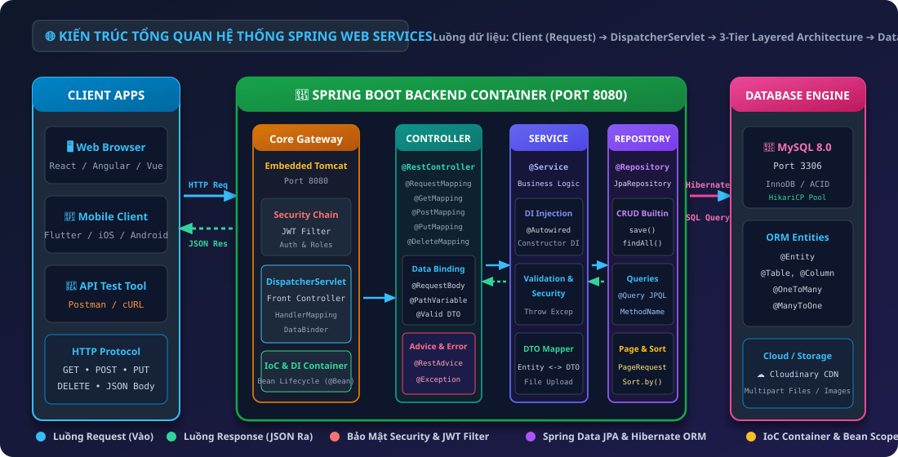
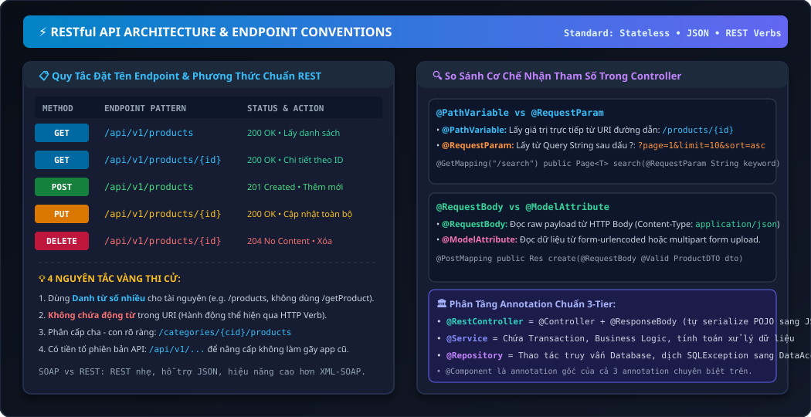
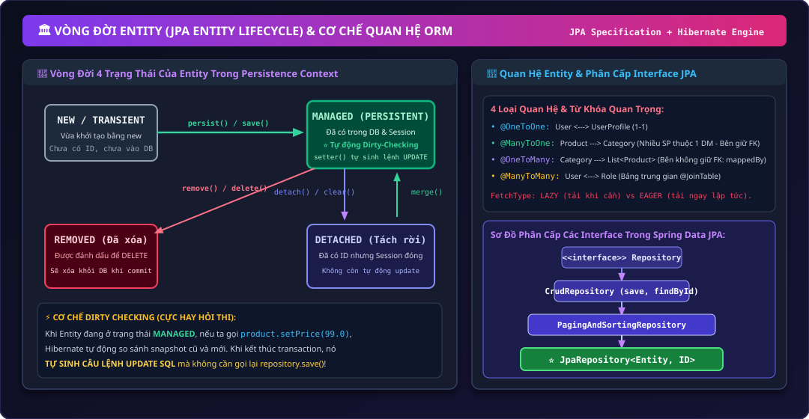
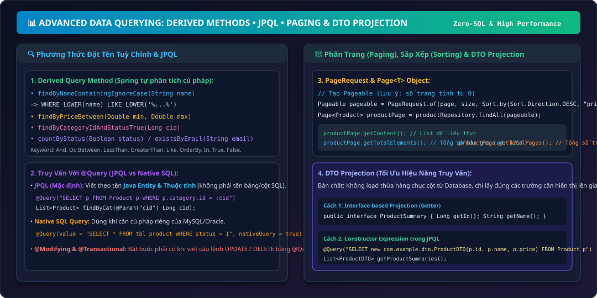
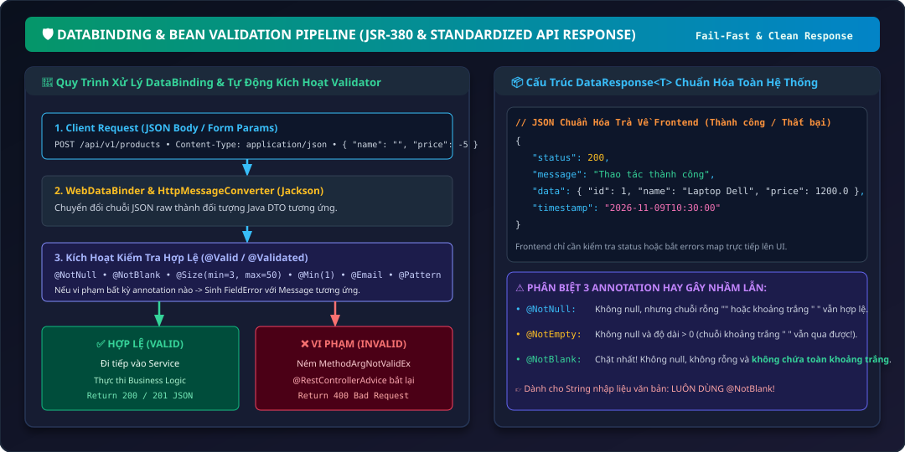
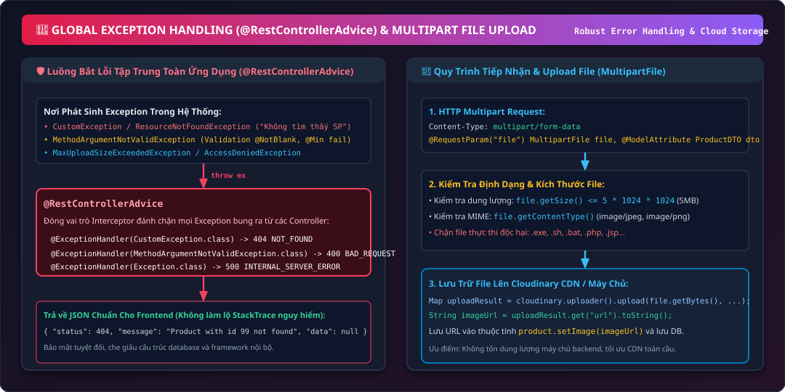
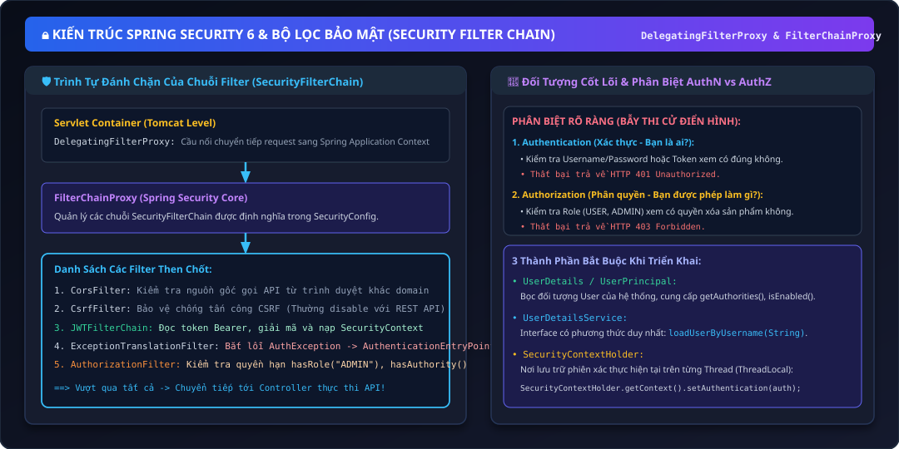
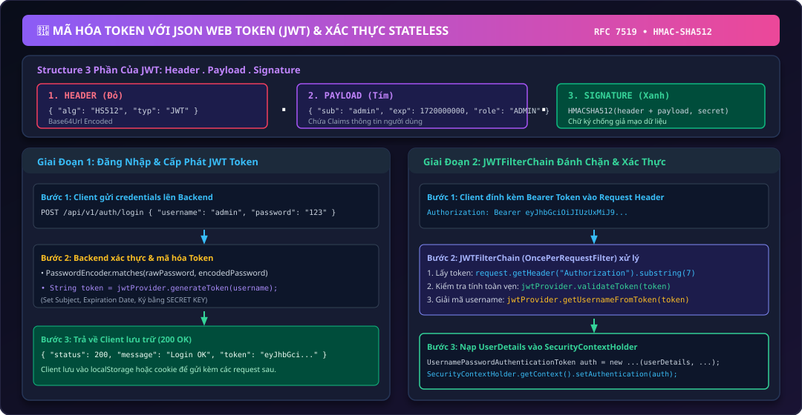
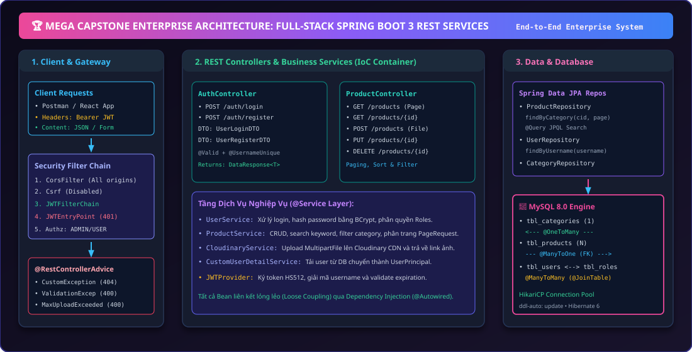

Lộ Trình Phát Triển Java Web Services & RESTful API Chuyên Nghiệp
Môn học trang bị nền tảng hoàn chỉnh để xây dựng Backend Production: từ Mô hình Web & HTTP, làm chủ Spring Framework (IoC/DI), thiết kế RESTful API chuẩn hóa, giao tiếp cơ sở dữ liệu Hibernate/JPA, xử lý dữ liệu phức tạp Paging & Filtering, bảo vệ tính toàn vẹn Validation & Exception Handling, tới tầng phòng thủ tối cao Spring Security 6 & JWT.

Hình 1: Vòng đời xử lý từ Client HTTP Request ➔ Embedded Tomcat ➔ DispatcherServlet ➔ Security Chain ➔ 3-Tier Layering ➔ Hibernate JPA ➔ MySQL Database.
| Giai đoạn | Phiên bản học phần | Công nghệ then chốt | Mục tiêu đầu ra |
|---|---|---|---|
| Nền tảng Web & Container | Session 01 & 02 | HTTP, Spring Boot 3, IoC/DI, @RestController, Postman | Tự tin thiết kế và xây dựng các Endpoint RESTful chuẩn danh từ số nhiều. |
| Tầng Dữ Liệu & ORM | Session 04 & 05 | JPA, Hibernate, JpaRepository, JPQL, Pageable, DTO Projection | Làm chủ ánh xạ ORM, quan hệ 1-N, N-M, phân trang và truy vấn tốc độ cao. |
| Toàn Vẹn & Xử Lý Lỗi | Session 07 & 08 | Jakarta Bean Validation, @RestControllerAdvice, Cloudinary, Multipart | Kiểm soát chặt chẽ dữ liệu đầu vào, bắt lỗi tập trung và xử lý file media. |
| Bảo Mật & Ủy Quyền | Session 10 & 11 | Spring Security 6, SecurityFilterChain, JWT, BCrypt, Stateless Session | Xây dựng hệ thống Authentication & RBAC Authorization chuẩn doanh nghiệp. |
Session 01: Tổng Quan Web & Kiến Trúc Spring
Khám phá mô hình Client-Server-Database, bản chất giao thức HTTP & Web API, nguyên lý đảo ngược điều khiển IoC & Tiêm phụ thuộc DI, đặc tính Spring Boot 3, cấu trúc dự án chuẩn và kiểm thử API với Postman.
Hình 1.1: Request từ Client gửi vào cổng 8080 ➔ DispatcherServlet định tuyến qua HandlerMapping ➔ Controller ➔ Service xử lý nghiệp vụ ➔ Repository lấy dữ liệu ➔ Trả JSON.
Giới Thiệu Mô Hình Web: Client – Server – Database
- Client (Frontend / Mobile): Gửi yêu cầu (Request) và hiển thị kết quả cho người dùng. Không nắm giữ logic nghiệp vụ nhạy cảm hay mật khẩu database.
- Server (Spring Boot Backend): Đóng vai trò bộ não, nhận Request, kiểm tra bảo mật (Authentication/Authorization), thực hiện nghiệp vụ và sinh kết quả (Response).
- Database (MySQL / PostgreSQL): Lưu trữ dữ liệu lâu bền (Persistence), bảo đảm tính toàn vẹn thông qua các ràng buộc khóa chính (PK), khóa ngoại (FK) và ACID.
HTTP & Web API Hoạt Động Như Thế Nào?
- Cấu trúc HTTP Request: Gồm 3 phần: Request Line (Method + URI + Version), Headers (Accept, Content-Type, Authorization), và Body (dữ liệu JSON/Form gửi lên).
- Cấu trúc HTTP Response: Gồm Status Line (HTTP/1.1 200 OK), Response Headers (Content-Type: application/json), và Response Body (Dữ liệu trả về).
- Web API (Application Programming Interface): Cổng kết nối dịch vụ cho phép hai hệ thống phần mềm trao đổi dữ liệu qua giao thức chuẩn HTTP và định dạng JSON.
| Đầu mã (Status Code) | Ý nghĩa tổng quan | Ví dụ kinh điển |
|---|---|---|
1xx (Informational) |
Yêu cầu đã được tiếp nhận, đang tiếp tục xử lý | 100 Continue |
2xx (Success) |
Thao tác thành công trọn vẹn | 200 OK (Lấy/sửa thành công), 201 Created (Thêm mới thành công), 204 No Content (Xóa thành công) |
3xx (Redirection) |
Tài nguyên đã di dời sang địa chỉ mới | 301 Moved Permanently, 302 Found |
4xx (Client Error) |
Lỗi do phía Client gửi dữ liệu sai, thiếu hoặc không đủ quyền | 400 Bad Request (Dữ liệu sai định dạng), 401 Unauthorized (Chưa đăng nhập), 403 Forbidden (Không có quyền), 404 Not Found (Không tìm thấy) |
5xx (Server Error) |
Lỗi do phía máy chủ Backend gặp ngoại lệ bất ngờ | 500 Internal Server Error (Bung Exception NullPointerException), 503 Service Unavailable |
Spring Framework Là Gì? Giới Thiệu IoC & DI
- IoC (Đảo ngược điều khiển): Lập trình viên không tự dùng từ khóa
newđể khởi tạo và quản lý đối tượng. Quyền kiểm soát vòng đời đối tượng (tạo, cấu hình, hủy) được giao phó cho Spring IoC Container. - Spring Bean: Là các đối tượng (Object) do Spring IoC Container khởi tạo, quản lý và tiêm vào nơi cần sử dụng.
- DI (Tiêm phụ thuộc): Cơ chế mà Container tự động đưa (inject) các phụ thuộc cần thiết vào một Bean khi Bean đó được tạo.
- 3 Cách thực hiện DI trong Spring:
- Field Injection: Dùng
@Autowiredtrực tiếp trên thuộc tính (tiện nhưng khó viết Unit Test độc lập). - Setter Injection: Dùng
@Autowiredtrên phương thức setter (dùng cho phụ thuộc tùy chọn). - Constructor Injection: Tiêm qua Constructor (Khuyến nghị số 1 trong thực tế, giúp class bất biến
finalvà test dễ dàng).
- Field Injection: Dùng
@RestController
@RequestMapping("/api/v1/products")
public class ProductController {
// Thuộc tính bất biến (immutable)
private final ProductService productService;
// Constructor Injection - Spring tự động inject Bean ProductService vào!
public ProductController(ProductService productService) {
this.productService = productService;
}
}Giới Thiệu Về Spring Boot & Các Đặc Điểm Nổi Bật
- Auto-Configuration (Tự động cấu hình): Spring Boot tự động quét classpath và cấu hình các Bean mặc định dựa trên các thư viện có trong dự án (ví dụ: thấy
mysql-connector-jthì tự cấu hình DataSource). - Starter Dependencies (spring-boot-starter-*): Gom cụm các thư viện tương thích vào 1 dependency duy nhất (ví dụ:
spring-boot-starter-webgom Tomcat, Jackson, Spring MVC, Validation). - Embedded Web Server (Tomcat nhúng): Ứng dụng đóng gói thành file
.jarđộc lập có thể chạy trực tiếp bằng lệnhjava -jar app.jarmà không cần cài đặt Tomcat bên ngoài. - Production-Ready: Tích hợp sẵn Spring Boot Actuator để kiểm tra sức khỏe hệ thống (Health Check, Metrics).
Spring Initializr – Tạo Dự Án Spring Boot & Cấu Trúc Dự Án
- Project: Maven hoặc Gradle (Trong khóa học dùng Gradle hoặc Maven).
- Language: Java (Java 17 LTS hoặc Java 21 LTS).
- Spring Boot: Bản 3.x (Bản ổn định cao nhất, dùng gói chuẩn
jakarta.*thay vìjavax.*). - Cấu trúc thư mục chuẩn mực:
src/main/java: Chứa toàn bộ mã nguồn Java của hệ thống.src/main/resources: Chứa file cấu hìnhapplication.propertieshoặcapplication.yml, cùng thư mục static/templates.src/test/java: Chứa mã kiểm thử Unit Test / Integration Test.build.gradle / pom.xml: Định nghĩa khai báo phiên bản và thư viện phụ thuộc.
Cấu Trúc Mô Hình Spring Boot (Front Controller & 3 Tầng)
- DispatcherServlet: Tiếp nhận mọi HTTP Request gửi tới cổng 8080, hỏi HandlerMapping xem Controller nào phụ trách URI đó, rồi chuyển giao request.
- Controller Layer (@RestController): Tầng tiếp nhận dữ liệu từ request, kiểm tra cú pháp và điều hướng tới Service.
- Service Layer (@Service): Nơi thực thi logic nghiệp vụ, tính toán, kiểm tra trạng thái và xử lý giao dịch dữ liệu.
- Repository Layer (@Repository): Tầng tương tác trực tiếp với cơ sở dữ liệu qua Hibernate/JPA.
Giới Thiệu Công Cụ Kiểm Thử API & Cài Đặt Postman
GET qua thanh địa chỉ URL. Để kiểm thử toàn diện các phương thức POST, PUT, DELETE kèm Headers và JSON Body, Postman là công cụ bắt buộc của mọi lập trình viên API.
- Workspace & Collections: Tạo nhóm gom cụm các API của từng đồ án/môn học.
- Environment Variables: Định nghĩa biến môi trường như
{{baseUrl}} = http://localhost:8080để không phải gõ lại URL mỗi lần test. - Headers: Cấu hình
Content-Type: application/jsonvàAuthorization: Bearer {{token}}. - Body Tab: Chọn
raw ➔ JSONđể gửi dữ liệu payload đối tượng.
Xây Dựng API Đầu Tiên & Kiểm Thử Bằng Postman
package com.example.session01.controller;
import org.springframework.web.bind.annotation.*;
import java.util.Map;
@RestController
@RequestMapping("/api/v1")
public class HelloController {
// Endpoint 1: Trả về chuỗi String đơn giản
@GetMapping("/hello")
public String sayHello() {
return "Xin chào sinh viên PTIT! Spring Boot API đã hoạt động!";
}
// Endpoint 2: Nhận query parameter và trả về JSON Map
@GetMapping("/greeting")
public Map<String, Object> greeting(@RequestParam(defaultValue = "Khách") String name) {
return Map.of(
"status", 200,
"message", "Chào mừng " + name + " đến với thế giới Java Web Services!",
"timestamp", System.currentTimeMillis()
);
}
}Lab 01: Xây Dựng Dịch Vụ Web Đầu Tiên (Student Greeting API) & Kiểm Thử Postman
Mục tiêu bài tập: Khởi tạo dự án Spring Boot 3 từ đầu, cấu hình cổng server, xây dựng lớp DTO phản hồi, tầng Service xử lý logic lời chào, và 2 REST Controller endpoint. Hướng dẫn chi tiết từ mã nguồn tới cách chạy và kiểm thử trên Postman.
Khởi Tạo Dự Án & Khai Báo Dependencies (build.gradle)
Tạo dự án Spring Boot 3 với Java 17+ và khai báo thư viện spring-boot-starter-web:
plugins {
id 'java'
id 'org.springframework.boot' version '3.2.5'
id 'io.spring.dependency-management' version '1.1.4'
}
group = 'com.example'
version = '0.0.1-SNAPSHOT'
java {
sourceCompatibility = '17'
}
repositories {
mavenCentral()
}
dependencies {
implementation 'org.springframework.boot:spring-boot-starter-web'
testImplementation 'org.springframework.boot:spring-boot-starter-test'
}
tasks.named('test') {
useJUnitPlatform()
}Cấu Hình Cổng Máy Chủ (application.properties)
Mở file cấu hình trong thư mục src/main/resources/application.properties:
# Cổng máy chủ backend lắng nghe
server.port=8080
# Tên định danh ứng dụng
spring.application.name=StudentGreetingServiceTạo Lớp DTO Phản Hồi (StudentGreetingResponse.java)
Tạo package com.example.session01.dto và định nghĩa đối tượng dữ liệu trả về:
package com.example.session01.dto;
public class StudentGreetingResponse {
private int status;
private String message;
private String studentName;
private long timestamp;
private String systemVersion;
public StudentGreetingResponse() {}
public StudentGreetingResponse(int status, String message, String studentName, long timestamp, String systemVersion) {
this.status = status;
this.message = message;
this.studentName = studentName;
this.timestamp = timestamp;
this.systemVersion = systemVersion;
}
// Getters and Setters
public int getStatus() { return status; }
public void setStatus(int status) { this.status = status; }
public String getMessage() { return message; }
public void setMessage(String message) { this.message = message; }
public String getStudentName() { return studentName; }
public void setStudentName(String studentName) { this.studentName = studentName; }
public long getTimestamp() { return timestamp; }
public void setTimestamp(long timestamp) { this.timestamp = timestamp; }
public String getSystemVersion() { return systemVersion; }
public void setSystemVersion(String systemVersion) { this.systemVersion = systemVersion; }
}Xây Dựng Tầng Nghiệp Vụ (GreetingService.java & GreetingServiceImpl.java)
Tạo interface và implementation trong package com.example.session01.service:
package com.example.session01.service;
import com.example.session01.dto.StudentGreetingResponse;
public interface GreetingService {
StudentGreetingResponse generateGreeting(String rawName);
}package com.example.session01.service.impl;
import com.example.session01.dto.StudentGreetingResponse;
import com.example.session01.service.GreetingService;
import org.springframework.stereotype.Service;
@Service
public class GreetingServiceImpl implements GreetingService {
@Override
public StudentGreetingResponse generateGreeting(String rawName) {
String studentName = (rawName == null || rawName.trim().isEmpty())
? "Sinh viên PTIT"
: rawName.trim();
String message = "Xin chào " + studentName + "! Chúc bạn học tốt môn Java Web Services!";
return new StudentGreetingResponse(
200,
message,
studentName,
System.currentTimeMillis(),
"Spring Boot 3.2.5"
);
}
}Xây Dựng REST Controller (StudentGreetingController.java)
Tạo controller tiêm phụ thuộc qua Constructor Injection:
package com.example.session01.controller;
import com.example.session01.dto.StudentGreetingResponse;
import com.example.session01.service.GreetingService;
import org.springframework.http.ResponseEntity;
import org.springframework.web.bind.annotation.*;
@RestController
@RequestMapping("/api/v1")
public class StudentGreetingController {
private final GreetingService greetingService;
// Constructor Dependency Injection
public StudentGreetingController(GreetingService greetingService) {
this.greetingService = greetingService;
}
// Endpoint 1: Trả về chuỗi String trực tiếp
@GetMapping("/hello")
public String sayHello() {
return "Spring Boot 3 Web Services Online!";
}
// Endpoint 2: Nhận query parameter và trả về JSON DTO
@GetMapping("/greeting")
public ResponseEntity<StudentGreetingResponse> getGreeting(
@RequestParam(required = false) String name) {
StudentGreetingResponse response = greetingService.generateGreeting(name);
return ResponseEntity.ok(response);
}
}Biên Dịch & Khởi Động Ứng Dụng
Mở terminal tại thư mục gốc của dự án và chạy lệnh sau:
# Đối với dự án dùng Gradle (Windows):
gradlew.bat bootRun
# Đối với dự án dùng Maven (Windows):
mvnw.cmd spring-boot:runTomcat started on port 8080 (http) with context path '' và Started Session01Application in X.XXX seconds.
Kịch Bản Kiểm Thử Hoàn Chỉnh Trên Postman & cURL
Mở Postman và thực hiện lần lượt các test case sau:
| Test Case | Method & URL | Headers | Kỳ vọng HTTP Status & Body |
|---|---|---|---|
| Case 1: Test Server Live | GET http://localhost:8080/api/v1/hello |
None | 200 OK Body text: Spring Boot 3 Web Services Online! |
| Case 2: Truyền Query Param | GET http://localhost:8080/api/v1/greeting?name=NguyenVanA |
Accept: application/json | 200 OK Body JSON có "studentName": "NguyenVanA" |
| Case 3: Không truyền Param | GET http://localhost:8080/api/v1/greeting |
Accept: application/json | 200 OK Body JSON có "studentName": "Sinh viên PTIT" |
{
"status": 200,
"message": "Xin chào NguyenVanA! Chúc bạn học tốt môn Java Web Services!",
"studentName": "NguyenVanA",
"timestamp": 1715241600000,
"systemVersion": "Spring Boot 3.2.5"
}Cẩm Nang Xử Lý Sự Cố (Troubleshooting)
- Lỗi "Port 8080 was already in use": Cổng 8080 đang bị ứng dụng khác (hoặc tiến trình Tomcat cũ chạy ngầm) chiếm giữ. Cách xử lý: Mở CMD gõ
netstat -ano | findstr :8080để tìm PID, sau đó gõtaskkill /PID <PID> /Fđể tắt tiến trình, hoặc đổi cổng trongapplication.propertiesthànhserver.port=8081. - Lỗi "404 Not Found" khi gọi API: Do đặt file Controller nằm ngoài package cha chứa
Session01Application(nơi có annotation@SpringBootApplication). Khắc phục: Đảm bảo Controller nằm trong sub-package nhưcom.example.session01.controllerđể Spring ComponentScan quét thấy.
Session 02: RESTful API & Phân Tầng Ứng Dụng
So sánh REST vs SOAP, 4 quy tắc vàng đặt tên URI Endpoint, làm chủ HTTP Methods & Status Codes, phân tầng @Controller/@Service/@Repository, phân biệt các Annotation ánh xạ và cơ chế binding tham số @PathVariable, @RequestParam, @RequestBody, @ModelAttribute.

Hình 2: Chuẩn đặt tên URI số nhiều, phân tách rõ ràng giữa GET/POST/PUT/DELETE, và cách phân biệt các annotation nhận tham số trong Controller.
RESTful Là Gì? So Sánh REST Và SOAP
| Tiêu chí so sánh | RESTful API (Hiện đại) | SOAP (Truyền thống) |
|---|---|---|
| Bản chất | Kiến trúc hướng tài nguyên (Resource-oriented) | Giao thức hướng hành động (Protocol-based) |
| Định dạng dữ liệu | Linh hoạt: JSON (chủ đạo), XML, Plain text, HTML | Chỉ hỗ trợ duy nhất XML cồng kềnh |
| Hiệu năng & Băng thông | Rất nhẹ, nhanh, tối ưu cho Web/Mobile | Nặng nề vì cấu trúc bọc SOAP Envelope phức tạp |
| Cơ chế Cache | Hỗ trợ mạnh mẽ qua HTTP Headers (Cache-Control) | Không hỗ trợ cache tự nhiên |
| Ứng dụng phổ biến | Web hiện đại, Mobile apps, Microservices | Ngân hàng, hệ thống tài chính viễn thông lâu đời |
Quy Tắc Đặt Tên Endpoint Trong REST (Best Practices)
- Nguyên tắc 1: Luôn dùng DANH TỪ SỐ NHIỀU đại diện cho tài nguyên: Dùng
/products, không dùng/product. - Nguyên tắc 2: TUYỆT ĐỐI KHÔNG chứa động từ trong URI: Sai lầm:
/getAllProducts,/createProduct,/deleteUser. Đúng chuẩn: Hành động được thể hiện qua HTTP Verb (GET, POST, DELETE). - Nguyên tắc 3: Phân cấp Cha - Con logic: Lấy danh sách sản phẩm thuộc danh mục số 5:
/categories/5/products. - Nguyên tắc 4: Luôn có tiền tố phiên bản API: Sử dụng
/api/v1/...để đảm bảo việc nâng cấp version 2 không làm hỏng ứng dụng của khách hàng cũ.
HTTP Methods & Status Codes Thông Dụng
| Method | Ý nghĩa thao tác | Tính Idempotent (Bảo toàn) | Mã Status trả về chuẩn |
|---|---|---|---|
| GET | Đọc/truy vấn dữ liệu (an toàn, không làm thay đổi DB) | Có (Gọi 100 lần kết quả vẫn thế) | 200 OK / 404 Not Found |
| POST | Thêm mới bản ghi vào hệ thống | Không (Gọi 2 lần sẽ sinh ra 2 bản ghi mới) | 201 Created (Kèm data vừa tạo) |
| PUT | Cập nhật/thay thế toàn bộ thông tin bản ghi | Có | 200 OK / 400 Bad Request |
| PATCH | Cập nhật một phần (chỉ sửa 1-2 trường nhỏ) | Không bắt buộc | 200 OK |
| DELETE | Xóa bản ghi khỏi cơ sở dữ liệu | Có | 204 No Content hoặc 200 OK |
Phân Tầng Ứng Dụng & Các Chú Thích Cơ Bản
- @Component: Annotation gốc mức cao nhất. Đánh dấu class là 1 Spring Bean để IoC Container tự động quét và quản lý.
- @Controller vs @RestController:
@Controller: Dùng cho mô hình MVC truyền thống sinh giao diện HTML (trả về tên file JSP/Thymeleaf view).@RestController: =@Controller + @ResponseBody. Tự động chuyển đổi đối tượng trả về (List, Map, Object) thành chuỗi JSON thông qua thư viện Jackson.
- @Service: Đánh dấu tầng dịch vụ nghiệp vụ (Business Logic), quản lý giao dịch
@Transactional. - @Repository: Đánh dấu tầng truy cập dữ liệu (Data Access), tự động dịch các ngoại lệ cấp thấp của JDBC sang
DataAccessExceptioncủa Spring.
Phân Biệt @RequestMapping, @GetMapping, @PostMapping, @PutMapping, @DeleteMapping
@GetMapping, @PostMapping, @PutMapping, @DeleteMapping thực chất là các Shortcut chuyên biệt hóa (Composed Annotations) của @RequestMapping được giới thiệu từ Spring 4.3 trở đi.
@RequestMapping(value = "/path", method = RequestMethod.GET)tương đương ngắn gọn là@GetMapping("/path").- Thường dùng
@RequestMapping("/api/v1/products")ở cấp độ Class để gom chung tiền tố URL cho toàn bộ Controller. - Dùng
@GetMapping, @PostMapping, @PutMapping, @DeleteMappingở cấp độ Method giúp code ngắn gọn, sáng rõ và chuyên nghiệp hơn rất nhiều.
Giới Thiệu @RequestParam vs @PathVariable
| Đặc tính | @PathVariable | @RequestParam |
|---|---|---|
| Vị trí lấy dữ liệu | Nằm trực tiếp trong đường dẫn URI: /products/{id} |
Nằm sau dấu hỏi chấm (?) Query String: /products?page=1&size=10 |
| Mục đích sử dụng | Định danh chính xác 1 tài nguyên cụ thể (ID, mã định danh) | Dùng để lọc (filter), tìm kiếm (search), sắp xếp (sort), phân trang (paging) |
| Ví dụ cú pháp | @GetMapping("/{id}") public Res getById(@PathVariable Long id) |
@GetMapping public Res search(@RequestParam(defaultValue = "0") int page) |
Giới Thiệu @RequestBody vs @ModelAttribute
- @RequestBody: Đọc luồng dữ liệu thô (raw payload) từ body, chủ yếu là định dạng
Content-Type: application/json. Sử dụng HttpMessageConverter (Jackson) để deserialize chuỗi JSON thành Java Object. Dùng cho API hiện đại trao đổi dữ liệu JSON. - @ModelAttribute: Đọc dữ liệu từ form HTML chuẩn:
application/x-www-form-urlencodedhoặcmultipart/form-data. Đặc biệt bắt buộc dùng khi phía Client gửi kèm file upload (ảnh, tài liệu).
Xây Dựng Các API Cơ Bản (CRUD Chuẩn Mực REST)
@RestController
@RequestMapping("/api/v1/products")
public class ProductRestController {
private final ProductService productService;
public ProductRestController(ProductService productService) {
this.productService = productService;
}
// 1. GET ALL
@GetMapping
public ResponseEntity<List<ProductDTO>> getAll() {
return ResponseEntity.ok(productService.getAllProducts());
}
// 2. GET BY ID
@GetMapping("/{id}")
public ResponseEntity<ProductDTO> getById(@PathVariable Long id) {
return ResponseEntity.ok(productService.getProductById(id));
}
// 3. POST CREATE (Trả về 201 Created)
@PostMapping
public ResponseEntity<ProductDTO> create(@RequestBody ProductDTO dto) {
ProductDTO created = productService.createProduct(dto);
return ResponseEntity.status(HttpStatus.CREATED).body(created);
}
// 4. PUT UPDATE
@PutMapping("/{id}")
public ResponseEntity<ProductDTO> update(@PathVariable Long id, @RequestBody ProductDTO dto) {
return ResponseEntity.ok(productService.updateProduct(id, dto));
}
// 5. DELETE (Trả về 204 No Content)
@DeleteMapping("/{id}")
public ResponseEntity<Void> delete(@PathVariable Long id) {
productService.deleteProduct(id);
return ResponseEntity.noContent().build();
}
}Lab 02: Xây Dựng Hệ Thống RESTful API CRUD Danh Mục Sản Phẩm Chuẩn Conventions
Mục tiêu bài tập: Xây dựng trọn vẹn 5 Endpoint RESTful CRUD danh mục sản phẩm (Category Service) lưu trữ in-memory thread-safe, chuẩn hóa HTTP Methods (GET, POST, PUT, DELETE) và Status Codes (200, 201, 204, 404). Hướng dẫn từng bước từ DTO, Service, Controller tới bộ test Postman.
Tạo Đối Tượng DTO (CategoryDTO.java)
Tạo class truyền tải dữ liệu trong package com.example.session02.model.dto:
package com.example.session02.model.dto;
public class CategoryDTO {
private Long id;
private String name;
private String description;
private Boolean active;
public CategoryDTO() {}
public CategoryDTO(Long id, String name, String description, Boolean active) {
this.id = id;
this.name = name;
this.description = description;
this.active = active;
}
// Getters and Setters
public Long getId() { return id; }
public void setId(Long id) { this.id = id; }
public String getName() { return name; }
public void setName(String name) { this.name = name; }
public String getDescription() { return description; }
public void setDescription(String description) { this.description = description; }
public Boolean getActive() { return active; }
public void setActive(Boolean active) { this.active = active; }
}Xây Dựng Interface Nghiệp Vụ (CategoryService.java)
package com.example.session02.service;
import com.example.session02.model.dto.CategoryDTO;
import java.util.List;
public interface CategoryService {
List<CategoryDTO> findAll();
CategoryDTO findById(Long id);
CategoryDTO create(CategoryDTO dto);
CategoryDTO update(Long id, CategoryDTO dto);
boolean delete(Long id);
}Triển Khai Lưu Trữ Thread-Safe (CategoryServiceImpl.java)
package com.example.session02.service.impl;
import com.example.session02.model.dto.CategoryDTO;
import com.example.session02.service.CategoryService;
import org.springframework.stereotype.Service;
import java.util.List;
import java.util.concurrent.CopyOnWriteArrayList;
import java.util.concurrent.atomic.AtomicLong;
@Service
public class CategoryServiceImpl implements CategoryService {
// Khởi tạo danh sách in-memory an toàn đa luồng
private final List<CategoryDTO> categories = new CopyOnWriteArrayList<>();
private final AtomicLong idGenerator = new AtomicLong(3);
public CategoryServiceImpl() {
// Dữ liệu mẫu ban đầu
categories.add(new CategoryDTO(1L, "Điện thoại", "Smartphone cao cấp chính hãng", true));
categories.add(new CategoryDTO(2L, "Laptop", "Máy tính xách tay văn phòng và gaming", true));
categories.add(new CategoryDTO(3L, "Phụ kiện", "Tai nghe, sạc dự phòng, chuột", false));
}
@Override
public List<CategoryDTO> findAll() {
return categories;
}
@Override
public CategoryDTO findById(Long id) {
return categories.stream()
.filter(c -> c.getId().equals(id))
.findFirst()
.orElse(null);
}
@Override
public CategoryDTO create(CategoryDTO dto) {
Long newId = idGenerator.incrementAndGet();
dto.setId(newId);
if (dto.getActive() == null) dto.setActive(true);
categories.add(dto);
return dto;
}
@Override
public CategoryDTO update(Long id, CategoryDTO dto) {
CategoryDTO existing = findById(id);
if (existing != null) {
existing.setName(dto.getName());
existing.setDescription(dto.getDescription());
existing.setActive(dto.getActive());
return existing;
}
return null;
}
@Override
public boolean delete(Long id) {
return categories.removeIf(c -> c.getId().equals(id));
}
}Xây Dựng REST Controller Chuẩn Quốc Tế (CategoryRestController.java)
package com.example.session02.controller;
import com.example.session02.model.dto.CategoryDTO;
import com.example.session02.service.CategoryService;
import org.springframework.http.HttpStatus;
import org.springframework.http.ResponseEntity;
import org.springframework.web.bind.annotation.*;
import java.util.List;
@RestController
@RequestMapping("/api/v1/categories")
public class CategoryRestController {
private final CategoryService categoryService;
public CategoryRestController(CategoryService categoryService) {
this.categoryService = categoryService;
}
// 1. GET ALL: 200 OK
@GetMapping
public ResponseEntity<List<CategoryDTO>> getAllCategories() {
return ResponseEntity.ok(categoryService.findAll());
}
// 2. GET BY ID: 200 OK hoặc 404 NOT FOUND
@GetMapping("/{id}")
public ResponseEntity<CategoryDTO> getCategoryById(@PathVariable Long id) {
CategoryDTO category = categoryService.findById(id);
if (category == null) {
return ResponseEntity.notFound().build();
}
return ResponseEntity.ok(category);
}
// 3. POST CREATE: 201 CREATED
@PostMapping
public ResponseEntity<CategoryDTO> createCategory(@RequestBody CategoryDTO dto) {
CategoryDTO created = categoryService.create(dto);
return ResponseEntity.status(HttpStatus.CREATED).body(created);
}
// 4. PUT UPDATE: 200 OK hoặc 404 NOT FOUND
@PutMapping("/{id}")
public ResponseEntity<CategoryDTO> updateCategory(
@PathVariable Long id,
@RequestBody CategoryDTO dto) {
CategoryDTO updated = categoryService.update(id, dto);
if (updated == null) {
return ResponseEntity.notFound().build();
}
return ResponseEntity.ok(updated);
}
// 5. DELETE: 204 NO CONTENT hoặc 404 NOT FOUND
@DeleteMapping("/{id}")
public ResponseEntity<Void> deleteCategory(@PathVariable Long id) {
boolean deleted = categoryService.delete(id);
if (!deleted) {
return ResponseEntity.notFound().build();
}
return ResponseEntity.noContent().build();
}
}Bộ Kịch Bản Kiểm Thử Toàn Diện 5 Endpoint Trên Postman
| Bước | Method & URL | Headers & Payload | Kỳ vọng HTTP Status & Kết quả |
|---|---|---|---|
| 1. Lấy danh sách | GET /api/v1/categories |
None | 200 OK: Danh sách 3 phần tử ban đầu (Điện thoại, Laptop, Phụ kiện). |
| 2. Lấy chi tiết | GET /api/v1/categories/1 |
None | 200 OK: JSON danh mục ID 1 "Điện thoại". |
| 3. Thêm mới | POST /api/v1/categories |
Content-Type: application/json{"name": "Đồng hồ thông minh", "description": "Smartwatch"} |
201 Created: Trả về đối tượng vừa tạo có ID = 4. |
| 4. Cập nhật | PUT /api/v1/categories/1 |
Content-Type: application/json{"name": "Điện thoại Flagship", "description": "iPhone, Galaxy"} |
200 OK: Dữ liệu ID 1 được cập nhật tên mới. |
| 5. Xóa danh mục | DELETE /api/v1/categories/2 |
None | 204 No Content: Body trống hoàn toàn. Gọi lại GET thấy ID 2 đã biến mất. |
Cẩm Nang Xử Lý Sự Cố (Troubleshooting)
- Lỗi "415 Unsupported Media Type": Xảy ra khi gửi lệnh POST hoặc PUT có Body nhưng quên thiết lập Header
Content-Type: application/jsontrên Postman. Khắc phục: Trong tab Headers, thêm keyContent-Typevới valueapplication/json(hoặc chọn Body > raw > JSON). - Lỗi "405 Method Not Allowed": Do gửi nhầm phương thức HTTP (ví dụ gọi GET vào URL chỉ định nghĩa POST, hoặc gọi DELETE vào URL chỉ nhận PUT). Kiểm tra kỹ method trên thanh chọn của Postman.
Session 04: ORM Và Spring Data JPA
Bản chất ORM, phân biệt JPA và Hibernate, cấu hình kết nối MySQL, làm chủ 4 trạng thái vòng đời Entity, cơ chế Dirty-Checking, thiết lập quan hệ @OneToOne, @OneToMany, @ManyToOne, @ManyToMany và phân cấp Interface Spring Data JPA.

Hình 3: Vòng đời chuyển dịch từ Transient ➔ Managed (Dirty-checking) ➔ Detached ➔ Removed và sơ đồ kế thừa JpaRepository.
ORM Là Gì? Giới Thiệu JPA Và Hibernate, Cài Đặt & Cấu Hình
- JPA (Jakarta Persistence API): Là bộ quy chuẩn (Specification) định nghĩa các giao diện và quy tắc chuẩn cho ORM trong Java. JPA không tự thực thi mà chỉ là bản thiết kế interface.
- Hibernate: Là bộ cài đặt thực thi cụ thể (Implementation Engine) phổ biến nhất của JPA.
- Cấu hình application.properties kết nối MySQL:
# Kết nối Database MySQL
spring.datasource.url=jdbc:mysql://localhost:3306/db_shop?createDatabaseIfNotExist=true&useSSL=false&serverTimezone=UTC
spring.datasource.username=root
spring.datasource.password=123456
spring.datasource.driver-class-name=com.mysql.cj.jdbc.Driver
# Cấu hình Hibernate JPA
spring.jpa.hibernate.ddl-auto=update
spring.jpa.show-sql=true
spring.jpa.properties.hibernate.format_sql=trueupdate: Chỉ tự thêm cột hoặc tạo bảng mới nếu chưa có (AN TOÀN KHI THỰC HÀNH).
validate / none: Môi trường Production doanh nghiệp chỉ dùng validate để không làm hỏng dữ liệu khách hàng.
Vòng Đời Của Entity & Các Chú Thích @Entity, @Id, @GeneratedValue, @Column
- Transient (New): Đối tượng vừa khởi tạo bằng từ khóa
new, chưa có ID và chưa thuộc sự quản lý của Persistence Context. - Managed (Persistent): Đã liên kết với EntityManager/Session. Đặc tính tối quan trọng: Tự động Dirty Checking! Mọi thao tác gọi
product.setPrice(...)sẽ tự sinh ra câu lệnh UPDATE SQL khi transaction commit mà không cần gọi lại repository.save(). - Detached: Đã có ID trong database nhưng Session quản lý đã đóng hoặc gọi
detach() / clear(). - Removed: Được đánh dấu để xóa khỏi Database khi transaction kết thúc (qua lệnh
remove()).
@Entity: Bắt buộc, báo cho JPA biết đây là 1 bảng cơ sở dữ liệu.@Table(name = "tbl_products"): Đặt tên bảng trong MySQL theo chuẩn danh từ số nhiều chữ thường gạch dưới.@Id: Đánh dấu thuộc tính là Khóa chính (Primary Key).@GeneratedValue(strategy = GenerationType.IDENTITY): Ủy quyền cho MySQL tự tăng ID (AUTO_INCREMENT).@Column(name = "product_name", nullable = false, length = 100, unique = true): Cấu hình tên cột, không cho phép null, độ dài tối đa và duy nhất.
Entity Relationship: @OneToOne, @OneToMany, @ManyToOne Và @ManyToMany
| Mối quan hệ | Ví dụ thực tế | Bên giữ Khóa Ngoại (Owner) | Bên đối ứng (Inverse) |
|---|---|---|---|
| 1 - 1 (@OneToOne) | User <---> UserProfile | UserProfile giữ FK: @JoinColumn(name = "user_id") |
User dùng mappedBy = "user" |
| N - 1 & 1 - N | Category (1) <---> Product (N) | Product giữ FK: @ManyToOne @JoinColumn(name = "category_id") |
Category: @OneToMany(mappedBy = "category") |
| N - N (@ManyToMany) | User <---> Role | Bảng trung gian sinh ra: @JoinTable(name = "user_roles", joinColumns = ..., inverseJoinColumns = ...) |
Role dùng mappedBy = "roles" |
- CascadeType: Lan truyền thao tác (ALL, PERSIST, MERGE, REMOVE). Cẩn trọng: Không bao giờ đặt
CascadeType.REMOVEtrên@ManyToOnekẻo xóa sản phẩm sẽ xóa luôn cả danh mục! - FetchType:
FetchType.LAZY(Tải lười - chỉ query khi cần, khuyến nghị mặc định) vsFetchType.EAGER(Tải háo hức - tự động JOIN lấy hết dữ liệu con, dễ gây chậm hệ thống).
Giới Thiệu Về Spring Data JPA & Sơ Đồ Phân Cấp Các Interface
JpaRepository, Spring sẽ tự động sinh mã triển khai (Runtime Proxy) mà không cần viết 1 dòng SQL nào.
Repository<T, ID>: Interface đánh dấu gốc (Marker Interface).CrudRepository<T, ID>: Cung cấp các thao tác CRUD cơ bản (save, findById, delete).PagingAndSortingRepository<T, ID>: Mở rộng khả năng phân trang (Pageable) và sắp xếp (Sort).JpaRepository<T, ID>: Interface mạnh mẽ và toàn diện nhất, kế thừa toàn bộ các interface trên và bổ sung các tính năng riêng của JPA như flush(), saveAndFlush(), deleteInBatch().
Interface JpaRepository & Các Phương Thức CRUD Mặc Định
@Repository
public interface ProductRepository extends JpaRepository<Product, Long> {
// Tự động có sẵn các method CRUD mặc định:
// 1. save(entity): Thêm mới (nếu id = null) hoặc Cập nhật (nếu id đã có trong DB)
// 2. findById(id): Tìm theo khóa chính, trả về Optional<Product> chống lỗi Null
// 3. findAll(): Lấy danh sách toàn bộ bản ghi List<Product>
// 4. existsById(id): Kiểm tra xem ID có tồn tại trong bảng không (trả về boolean)
// 5. count(): Đếm tổng số bản ghi
// 6. deleteById(id): Xóa bản ghi theo ID
}Tích Hợp Xây Dựng Các API Cơ Bản Kết Nối Cơ Sở Dữ Liệu
Lab 04: Thiết Kế Entity Quan Hệ 1-N (Category - Product) & Kết Nối MySQL 8.0
Mục tiêu bài tập: Kết nối Spring Boot 3 với MySQL 8.0, thiết kế 2 Entity có quan hệ 1-N (1 Danh mục chứa nhiều Sản phẩm) bằng @OneToMany và @ManyToOne, dùng JpaRepository tự sinh câu lệnh SQL và kiểm thử thêm dữ liệu quan hệ trên Postman.
Khai Báo Dependencies MySQL & JPA Trong build.gradle
dependencies {
implementation 'org.springframework.boot:spring-boot-starter-web'
implementation 'org.springframework.boot:spring-boot-starter-data-jpa'
runtimeOnly 'com.mysql:mysql-connector-j'
testImplementation 'org.springframework.boot:spring-boot-starter-test'
}Cấu Hình Kết Nối MySQL Trong application.properties
# Kết nối Database MySQL
spring.datasource.url=jdbc:mysql://localhost:3306/db_shop_session04?createDatabaseIfNotExist=true&useSSL=false&serverTimezone=UTC
spring.datasource.username=root
spring.datasource.password=123456
spring.datasource.driver-class-name=com.mysql.cj.jdbc.Driver
# Cấu hình Hibernate tự sinh bảng và in SQL ra console
spring.jpa.hibernate.ddl-auto=update
spring.jpa.show-sql=true
spring.jpa.properties.hibernate.format_sql=trueXây Dựng Entity Category (Bên 1)
Tạo class Category.java trong package com.example.session04.model.entity:
package com.example.session04.model.entity;
import jakarta.persistence.*;
import java.util.ArrayList;
import java.util.List;
@Entity
@Table(name = "tbl_categories")
public class Category {
@Id
@GeneratedValue(strategy = GenerationType.IDENTITY)
private Long id;
@Column(nullable = false, unique = true, length = 100)
private String name;
private String description;
// Quan hệ 1-N: mappedBy trỏ tới tên biến 'category' bên Entity Product
@OneToMany(mappedBy = "category", cascade = CascadeType.ALL, fetch = FetchType.LAZY)
private List<Product> products = new ArrayList<>();
public Category() {}
public Category(String name, String description) {
this.name = name;
this.description = description;
}
// Getters and Setters
public Long getId() { return id; }
public void setId(Long id) { this.id = id; }
public String getName() { return name; }
public void setName(String name) { this.name = name; }
public String getDescription() { return description; }
public void setDescription(String description) { this.description = description; }
public List<Product> getProducts() { return products; }
public void setProducts(List<Product> products) { this.products = products; }
}Xây Dựng Entity Product (Bên N Giữ Khóa Ngoại)
package com.example.session04.model.entity;
import jakarta.persistence.*;
@Entity
@Table(name = "tbl_products")
public class Product {
@Id
@GeneratedValue(strategy = GenerationType.IDENTITY)
private Long id;
@Column(nullable = false, length = 150)
private String name;
@Column(nullable = false)
private Double price;
// Khóa ngoại liên kết bảng tbl_categories
@ManyToOne(fetch = FetchType.LAZY)
@JoinColumn(name = "category_id", nullable = false)
private Category category;
public Product() {}
public Product(String name, Double price, Category category) {
this.name = name;
this.price = price;
this.category = category;
}
// Getters and Setters
public Long getId() { return id; }
public void setId(Long id) { this.id = id; }
public String getName() { return name; }
public void setName(String name) { this.name = name; }
public Double getPrice() { return price; }
public void setPrice(Double price) { this.price = price; }
public Category getCategory() { return category; }
public void setCategory(Category category) { this.category = category; }
}Xây Dựng Các Interface Repository (Spring Data JPA)
package com.example.session04.repository;
import com.example.session04.model.entity.Category;
import org.springframework.data.jpa.repository.JpaRepository;
import org.springframework.stereotype.Repository;
@Repository
public interface CategoryRepository extends JpaRepository<Category, Long> {
}
// ProductRepository.java
package com.example.session04.repository;
import com.example.session04.model.entity.Product;
import org.springframework.data.jpa.repository.JpaRepository;
import org.springframework.stereotype.Repository;
import java.util.List;
@Repository
public interface ProductRepository extends JpaRepository<Product, Long> {
// Tìm tất cả sản phẩm thuộc 1 danh mục
List<Product> findByCategoryId(Long categoryId);
}Khởi Động Ứng Dụng & Kiểm Tra Database MySQL
Khởi động Spring Boot. Quan sát log Hibernate tự động sinh câu lệnh DDL:
Hibernate: create table tbl_categories (id bigint not null auto_increment, description varchar(255), name varchar(100) not null, primary key (id)) engine=InnoDB
Hibernate: create table tbl_products (id bigint not null auto_increment, name varchar(150) not null, price float(53) not null, category_id bigint not null, primary key (id)) engine=InnoDB
Hibernate: alter table tbl_products add constraint FK_product_category foreign key (category_id) references tbl_categories (id)DESCRIBE tbl_products; thấy trường category_id mang Key MUL (Foreign Key).
Kịch Bản Test Postman Thêm & Truy Vấn Dữ Liệu Quan Hệ
Thực hiện tuần tự 2 bước thêm dữ liệu:
{
"name": "Thiết Bị Điện Tử",
"description": "Smartphones and Laptops"
}{
"name": "Laptop Dell XPS 13",
"price": 28500000.0,
"categoryId": 1
}Cẩm Nang Xử Lý Sự Cố (Troubleshooting)
- Lỗi lặp vô tận JSON Jackson (Infinite Recursion StackOverflowError): Xảy ra khi Entity Category trỏ tới List<Product> và Product lại trỏ ngược về Category. Khi Jackson serialize sang JSON sẽ bị đệ quy vòng lặp sập app! Khắc phục: Không bao giờ trả trực tiếp Entity ra Controller, luôn ánh xạ sang DTO chỉ chứa các trường cần thiết (ví dụ `categoryName`, `categoryId`).
- Lỗi "Access denied for user 'root'@'localhost'": Do sai mật khẩu MySQL trong `application.properties`. Hãy kiểm tra tài khoản root đã tạo đúng mật khẩu hay chưa.
Session 05: Truy Vấn Dữ Liệu Nâng Cao
Khai thác sức mạnh của Derived Query Methods, phân trang chuyên nghiệp với PageRequest & Page<T>, viết câu lệnh JPQL với @Query, tối ưu băng thông với DTO Projection và xây dựng API lọc tìm kiếm đa tiêu chí.

Hình 4: Cách Spring Data JPA dịch tên phương thức thành SQL, xử lý phân trang PageRequest(page, size, sort) và cấu trúc DTO Projection.
Truy Vấn Dữ Liệu Với Phương Thức Tuỳ Chỉnh (Derived Query Methods)
findBy..., readBy..., queryBy..., countBy..., existsBy... kết hợp các từ khóa thuộc tính để sinh câu lệnh SQL tương ứng mà không cần viết câu lệnh truy vấn!
findByNameContainingIgnoreCase(String keyword): Tìm kiếm gần đúng không phân biệt hoa thường (tương đươngWHERE LOWER(name) LIKE '%keyword%').findByPriceBetween(Double min, Double max): Lọc sản phẩm trong khoảng giá (WHERE price BETWEEN min AND max).findByCategoryIdAndStatusTrue(Long categoryId): Lọc theo khóa ngoại danh mục và trạng thái còn hàng.existsByEmail(String email): Kiểm tra email đã có người đăng ký chưa (trả về boolean).
Paging Và Sorting: PageRequest, Sort, Page<T>
findAll() load hết vào RAM! Bắt buộc phải dùng Pageable để phân trang và sắp xếp.
- Chỉ số trang (Zero-based): Trang đầu tiên trong Spring có chỉ số là 0 (page = 0 là trang 1).
- Khởi tạo Pageable:
Pageable pageable = PageRequest.of(page, size, Sort.by(Sort.Direction.DESC, "price")); - Đối tượng phản hồi Page<T>: Cung cấp trọn bộ siêu dữ liệu:
page.getContent(): Danh sách bản ghi của trang hiện tại (ví dụ: 10 sản phẩm).page.getTotalElements(): Tổng số bản ghi trong bảng (ví dụ: 1500).page.getTotalPages(): Tổng số trang (ví dụ: 150 trang).page.isLast() / page.isFirst(): Kiểm tra xem có phải trang cuối/đầu tiên không.
Truy Vấn Với @Query, JPQL (Java Persistence Query Language)
- JPQL (Mặc định): Viết câu truy vấn theo tên Class Entity và thuộc tính Java (phân biệt hoa thường!). Độc lập với hệ quản trị cơ sở dữ liệu.
- Native SQL (nativeQuery = true): Viết trực tiếp theo cú pháp SQL của MySQL (tên bảng và tên cột vật lý). Dùng khi cần các hàm chuyên biệt của database.
// 1. JPQL: Thao tác trên Entity Product và p.price
@Query("SELECT p FROM Product p WHERE p.price >= :minPrice AND p.category.id = :cid")
List<Product> searchProducts(@Param("minPrice") Double minPrice, @Param("cid") Long cid);
// 2. UPDATE / DELETE bằng @Query bắt buộc phải có @Modifying và @Transactional!
@Modifying
@Transactional
@Query("UPDATE Product p SET p.price = p.price * 1.1 WHERE p.category.id = :cid")
int increasePriceByCategory(@Param("cid") Long cid);DTO Projection – Trả Dữ Liệu Theo Định Dạng Mong Muốn
- Interface-based Projection: Định nghĩa interface chỉ có các hàm getter:
public interface ProductSummary { Long getId(); String getName(); Double getPrice(); } - Class-based Constructor Expression: Dùng từ khóa
SELECT new com.example.dto.ProductDTO(p.id, p.name, p.price) FROM Product p.
Tạo API Lọc / Sắp Xếp Danh Sách Kết Hợp Phân Trang
@GetMapping("/filter")
public ResponseEntity<Page<ProductDTO>> filterProducts(
@RequestParam(required = false) String keyword,
@RequestParam(required = false) Double minPrice,
@RequestParam(required = false) Double maxPrice,
@RequestParam(defaultValue = "0") int page,
@RequestParam(defaultValue = "10") int size,
@RequestParam(defaultValue = "id") String sortBy,
@RequestParam(defaultValue = "asc") String direction) {
Sort sort = direction.equalsIgnoreCase("desc") ? Sort.by(sortBy).descending() : Sort.by(sortBy).ascending();
Pageable pageable = PageRequest.of(page, size, sort);
return ResponseEntity.ok(productService.filterProducts(keyword, minPrice, maxPrice, pageable));
}Lab 05: Xây Dựng API Tìm Kiếm Phân Trang & Sắp Xếp Đa Tiêu Chí
Mục tiêu bài tập: Viết phương thức truy vấn JPQL @Query tìm kiếm linh hoạt (theo từ khóa tên, khoảng giá min-max, danh mục), tích hợp phân trang PageRequest và sắp xếp Sort, đóng gói kết quả chuẩn trong đối tượng DTO.
Viết Truy Vấn JPQL Đa Tiêu Chí Trong ProductRepository.java
Thêm phương thức tìm kiếm linh hoạt (cho phép tham số null) kết hợp Pageable:
package com.example.session05.repository;
import com.example.session05.model.entity.Product;
import org.springframework.data.domain.Page;
import org.springframework.data.domain.Pageable;
import org.springframework.data.jpa.repository.JpaRepository;
import org.springframework.data.jpa.repository.Query;
import org.springframework.data.repository.query.Param;
import org.springframework.stereotype.Repository;
@Repository
public interface ProductRepository extends JpaRepository<Product, Long> {
// Truy vấn JPQL đa tiêu chí: nếu tham số = null thì bỏ qua điều kiện đó
@Query("SELECT p FROM Product p WHERE " +
"(:keyword IS NULL OR LOWER(p.name) LIKE LOWER(CONCAT('%', :keyword, '%'))) AND " +
"(:minPrice IS NULL OR p.price >= :minPrice) AND " +
"(:maxPrice IS NULL OR p.price <= :maxPrice) AND " +
"(:categoryId IS NULL OR p.category.id = :categoryId)")
Page<Product> searchProducts(
@Param("keyword") String keyword,
@Param("minPrice") Double minPrice,
@Param("maxPrice") Double maxPrice,
@Param("categoryId") Long categoryId,
Pageable pageable);
}Tạo DTO Phản Hồi Phân Trang (PaginationResponse.java)
package com.example.session05.model.dto;
import java.util.List;
public class PaginationResponse<T> {
private List<T> content;
private int pageNumber;
private int pageSize;
private long totalElements;
private int totalPages;
private boolean last;
public PaginationResponse(List<T> content, int pageNumber, int pageSize, long totalElements, int totalPages, boolean last) {
this.content = content;
this.pageNumber = pageNumber;
this.pageSize = pageSize;
this.totalElements = totalElements;
this.totalPages = totalPages;
this.last = last;
}
// Getters and Setters
public List<T> getContent() { return content; }
public int getPageNumber() { return pageNumber; }
public int getPageSize() { return pageSize; }
public long getTotalElements() { return totalElements; }
public int getTotalPages() { return totalPages; }
public boolean isLast() { return last; }
}Xây Dựng Service Xử Lý PageRequest & Sắp Xếp
package com.example.session05.service.impl;
import com.example.session05.model.dto.PaginationResponse;
import com.example.session05.model.dto.ProductResponseDTO;
import com.example.session05.model.entity.Product;
import com.example.session05.repository.ProductRepository;
import com.example.session05.service.ProductService;
import org.springframework.data.domain.*;
import org.springframework.stereotype.Service;
import java.util.List;
@Service
public class ProductServiceImpl implements ProductService {
private final ProductRepository productRepository;
public ProductServiceImpl(ProductRepository productRepository) {
this.productRepository = productRepository;
}
@Override
public PaginationResponse<ProductResponseDTO> searchProducts(
String keyword, Double minPrice, Double maxPrice, Long categoryId,
int page, int size, String sortBy, String direction) {
// Tạo đối tượng Sort an toàn
Sort sort = direction.equalsIgnoreCase("desc")
? Sort.by(sortBy).descending()
: Sort.by(sortBy).ascending();
Pageable pageable = PageRequest.of(page, size, sort);
Page<Product> productPage = productRepository.searchProducts(keyword, minPrice, maxPrice, categoryId, pageable);
// Chuyển đổi Entity sang DTO
List<ProductResponseDTO> dtoList = productPage.getContent().stream()
.map(p -> new ProductResponseDTO(p.getId(), p.getName(), p.getPrice(), p.getCategory().getName()))
.toList();
return new PaginationResponse<>(
dtoList,
productPage.getNumber(),
productPage.getSize(),
productPage.getTotalElements(),
productPage.getTotalPages(),
productPage.isLast()
);
}
}Xây Dựng REST Controller Tìm Kiếm Phân Trang
@RestController
@RequestMapping("/api/v1/products")
public class ProductSearchController {
private final ProductService productService;
public ProductSearchController(ProductService productService) {
this.productService = productService;
}
@GetMapping("/search")
public ResponseEntity<PaginationResponse<ProductResponseDTO>> search(
@RequestParam(required = false) String keyword,
@RequestParam(required = false) Double minPrice,
@RequestParam(required = false) Double maxPrice,
@RequestParam(required = false) Long categoryId,
@RequestParam(defaultValue = "0") int page,
@RequestParam(defaultValue = "5") int size,
@RequestParam(defaultValue = "id") String sortBy,
@RequestParam(defaultValue = "asc") String direction) {
return ResponseEntity.ok(productService.searchProducts(
keyword, minPrice, maxPrice, categoryId, page, size, sortBy, direction));
}
}Kịch Bản Test Postman Phân Trang & Sắp Xếp
| Yêu cầu test | URL Request | Kỳ vọng phản hồi |
|---|---|---|
| Trang 0, size 2 | GET /api/v1/products/search?page=0&size=2 |
Mảng content có đúng 2 phần tử, totalPages > 1. |
| Sắp xếp giá giảm dần | GET /api/v1/products/search?sortBy=price&direction=desc |
Sản phẩm đắt nhất đứng đầu danh sách. |
| Tìm kiếm từ khóa "Laptop" | GET /api/v1/products/search?keyword=laptop |
Chỉ các sản phẩm có chữ laptop trong tên được trả về. |
| Lọc giá từ 10tr đến 30tr | GET /api/v1/products/search?minPrice=10000000&maxPrice=30000000 |
Chỉ các sản phẩm trong tầm giá được chọn. |
Cẩm Nang Xử Lý Sự Cố (Troubleshooting)
- Lỗi nhầm lẫn trang 1 là trang đầu: Spring Data JPA quy định trang đầu tiên có chỉ số
page = 0. Nếu Client gửipage = 1, hệ thống sẽ bỏ qua trang đầu tiên và hiển thị từ trang thứ 2. Hãy dặn Frontend trừ 1 đơn vị trước khi gửi request. - Lỗi "PropertyReferenceException: No property 'xyz' found for type 'Product'": Do tham số
sortBytruyền tên thuộc tính không tồn tại trong class Entity (ví dụ truyềnsortBy=productPricethay vìsortBy=price).
Session 07: Data Binding, Validation
Bản chất cơ chế WebDataBinder, phân biệt binding với @RequestBody vs @ModelAttribute, khai thác bộ thư viện Jakarta Bean Validation (@Valid, @NotNull, @NotBlank, @Size, @Email), tùy biến thông báo lỗi tiếng Việt và xây dựng cấu trúc DataResponse<T> chuẩn hóa.

Hình 5: JSON Request ➔ Jackson/WebDataBinder ➔ @Valid kích hoạt Hibernate Validator ➔ Trả 200 hoặc ném lỗi 400 chuẩn hóa.
Giới Thiệu Cơ Chế DataBinding Trong Spring
Binding Dữ Liệu Với @RequestBody Và @ModelAttribute
- @RequestBody: Đọc trực tiếp từ InputStream của HTTP Body, chuyển đổi qua thư viện Jackson ObjectMapper. Phù hợp tuyệt đối cho REST API nhận JSON.
- @ModelAttribute: Đọc dữ liệu từ Form Parameters. Bắt buộc dùng khi người dùng upload file đính kèm (Multipart).
Validation Với @Valid, @NotNull, @NotBlank, @NotEmpty, @Size, @Min, @Max, @Email
@NotNull: Chỉ kiểm tra giá trị khácnull. Chuỗi rỗng""hoặc chuỗi khoảng trắng" "vẫn HỢP LỆ!@NotEmpty: Kiểm tra khácnullVÀ độ dài > 0. Tuy nhiên chuỗi toàn dấu cách" "vẫn VƯỢT QUA!@NotBlank: Chặt chẽ nhất! Khác null, độ dài > 0 và loại bỏ khoảng trắng (trim). Bắt buộc dùng cho tên, mật khẩu, tiêu đề.
public class ProductRequestDTO {
@NotBlank(message = "Tên sản phẩm không được để trống!")
@Size(min = 3, max = 150, message = "Tên sản phẩm phải từ 3 đến 150 ký tự!")
private String name;
@NotNull(message = "Giá sản phẩm là bắt buộc!")
@Min(value = 1, message = "Giá sản phẩm phải lớn hơn 0!")
private Double price;
@NotNull(message = "Vui lòng chọn danh mục cho sản phẩm!")
private Long categoryId;
}Custom Message Lỗi & Tạo Response Chuẩn Hóa (status, message, data)
DataResponse<T>.
public class DataResponse<T> {
private int status;
private String message;
private T data;
public DataResponse(int status, String message, T data) {
this.status = status;
this.message = message;
this.data = data;
}
// Getter, Setter
}Tích Hợp Validation Vào API Controller
@PostMapping
public ResponseEntity<DataResponse<ProductDTO>> createProduct(
@Valid @RequestBody ProductRequestDTO dto) {
ProductDTO result = productService.createProduct(dto);
return ResponseEntity.status(HttpStatus.CREATED)
.body(new DataResponse<>(201, "Thêm mới sản phẩm thành công!", result));
}Lab 07: Tích Hợp Jakarta Bean Validation & Chuẩn Hóa Phản Hồi DataResponse<T>
Mục tiêu bài tập: Khai báo thư viện validation, thiết kế generic wrapper DataResponse<T>, gắn các ràng buộc @NotBlank, @NotNull, @Size, @Min lên DTO nhập liệu và kiểm thử bắt lỗi tự động với Postman.
Thêm Thư Viện Validation Vào build.gradle
dependencies {
implementation 'org.springframework.boot:spring-boot-starter-web'
implementation 'org.springframework.boot:spring-boot-starter-validation'
testImplementation 'org.springframework.boot:spring-boot-starter-test'
}Xây Dựng Cấu Trúc Phản Hồi Chuẩn Hóa (DataResponse.java)
package com.example.session07.model.dto;
import java.time.LocalDateTime;
public class DataResponse<T> {
private int status;
private String message;
private T data;
private LocalDateTime timestamp;
public DataResponse() {
this.timestamp = LocalDateTime.now();
}
public DataResponse(int status, String message, T data) {
this.status = status;
this.message = message;
this.data = data;
this.timestamp = LocalDateTime.now();
}
// Getters and Setters
public int getStatus() { return status; }
public void setStatus(int status) { this.status = status; }
public String getMessage() { return message; }
public void setMessage(String message) { this.message = message; }
public T getData() { return data; }
public void setData(T data) { this.data = data; }
public LocalDateTime getTimestamp() { return timestamp; }
public void setTimestamp(LocalDateTime timestamp) { this.timestamp = timestamp; }
}Xây Dựng DTO Ràng Buộc Validation (ProductCreateDTO.java)
package com.example.session07.model.dto;
import jakarta.validation.constraints.*;
public class ProductCreateDTO {
@NotBlank(message = "Tên sản phẩm không được để trống hoặc chỉ chứa khoảng trắng!")
@Size(min = 3, max = 150, message = "Tên sản phẩm phải từ 3 đến 150 ký tự!")
private String name;
@NotNull(message = "Giá sản phẩm là trường bắt buộc!")
@Min(value = 1000, message = "Giá sản phẩm tối thiểu phải từ 1.000 VNĐ!")
private Double price;
@NotNull(message = "Vui lòng chọn danh mục cho sản phẩm!")
private Long categoryId;
// Getters and Setters
public String getName() { return name; }
public void setName(String name) { this.name = name; }
public Double getPrice() { return price; }
public void setPrice(Double price) { this.price = price; }
public Long getCategoryId() { return categoryId; }
public void setCategoryId(Long categoryId) { this.categoryId = categoryId; }
}Xây Dựng Controller Gắn Chú Thích @Valid
package com.example.session07.controller;
import com.example.session07.model.dto.DataResponse;
import com.example.session07.model.dto.ProductCreateDTO;
import jakarta.validation.Valid;
import org.springframework.http.HttpStatus;
import org.springframework.http.ResponseEntity;
import org.springframework.web.bind.annotation.*;
@RestController
@RequestMapping("/api/v1/products")
public class ProductValidationController {
@PostMapping
public ResponseEntity<DataResponse<ProductCreateDTO>> createProduct(
@Valid @RequestBody ProductCreateDTO dto) {
// Dữ liệu đã vượt qua vòng kiểm duyệt Bean Validation an toàn
DataResponse<ProductCreateDTO> response = new DataResponse<>(
201,
"Thêm mới sản phẩm hợp lệ thành công!",
dto
);
return ResponseEntity.status(HttpStatus.CREATED).body(response);
}
}Kịch Bản Test Postman: Gửi Dữ Liệu Lỗi & Quan Sát Phản Hồi
Gửi POST tới http://localhost:8080/api/v1/products với JSON vi phạm validation:
{
"name": " ",
"price": -500.0,
"categoryId": null
}400 Bad Request (ném ngoại lệ MethodArgumentNotValidException). Dữ liệu sai hoàn toàn bị chặn đứng trước khi vào tầng Service!
Cẩm Nang Xử Lý Sự Cố (Troubleshooting)
- Lỗi gửi dữ liệu sai nhưng API vẫn chạy bình thường: Do quên thêm annotation
@Validtrước tham số@RequestBody ProductCreateDTO dtotrong Controller. Nếu thiếu@Valid, Spring sẽ không kích hoạt Hibernate Validator. - Lỗi "ClassNotFoundException: jakarta.validation.Valid": Trong Spring Boot 3, Validation không còn nằm sẵn trong web starter. Bạn bắt buộc phải thêm dòng
implementation 'org.springframework.boot:spring-boot-starter-validation'vàobuild.gradle.
Session 08: Exception Handling & File Upload
Xây dựng bộ xử lý ngoại lệ tập trung với @RestControllerAdvice và @ExceptionHandler, phân loại Custom Exceptions, tiếp nhận tệp tin với MultipartFile, kiểm tra kích thước & định dạng, và tích hợp lưu trữ ảnh lên dịch vụ Cloudinary CDN.

Hình 6: Luồng đánh chặn ngoại lệ tập trung trả về JSON chuẩn, cùng quy trình kiểm duyệt và upload file media lên Cloudinary.
Tạo Global Exception Handler Với @RestControllerAdvice
try-catch lặp đi lặp lại ở mọi Controller! Spring cung cấp @RestControllerAdvice theo mẫu thiết kế AOP (Aspect-Oriented Programming) đóng vai trò một chiếc lưới bảo vệ bao quanh toàn bộ các Controller trong hệ thống.
- Bất kỳ Exception nào bung ra ở tầng Repository, Service hay Controller đều sẽ bay thẳng về
@RestControllerAdvice. - Tại đây, ta bóc tách thông tin lỗi, log lại hệ thống và định dạng lại thành chuỗi JSON phản hồi sạch sẽ, che giấu hoàn toàn StackTrace nhạy cảm của máy chủ.
Phân Loại Exception & Xử Lý Theo Lỗi Với @ExceptionHandler
@RestControllerAdvice
public class GlobalExceptionHandler {
// 1. Bắt lỗi không tìm thấy tài nguyên (404 NOT FOUND)
@ExceptionHandler(CustomException.class)
public ResponseEntity<DataResponse<Void>> handleCustomException(CustomException ex) {
return ResponseEntity.status(HttpStatus.NOT_FOUND)
.body(new DataResponse<>(404, ex.getMessage(), null));
}
// 2. Bắt lỗi vi phạm Bean Validation (400 BAD REQUEST)
@ExceptionHandler(MethodArgumentNotValidException.class)
public ResponseEntity<DataResponse<Map<String, String>>> handleValidation(MethodArgumentNotValidException ex) {
Map<String, String> errors = new HashMap<>();
ex.getBindingResult().getFieldErrors().forEach(err ->
errors.put(err.getField(), err.getDefaultMessage())
);
return ResponseEntity.badRequest()
.body(new DataResponse<>(400, "Dữ liệu gửi lên không hợp lệ!", errors));
}
// 3. Bắt lỗi ngoại lệ chưa lường trước (500 INTERNAL SERVER ERROR)
@ExceptionHandler(Exception.class)
public ResponseEntity<DataResponse<Void>> handleGeneralException(Exception ex) {
return ResponseEntity.status(HttpStatus.INTERNAL_SERVER_ERROR)
.body(new DataResponse<>(500, "Lỗi máy chủ nội bộ: " + ex.getMessage(), null));
}
}Upload File Với MultipartFile Trong Spring Boot
getOriginalFilename(), getContentType(), getSize(), getBytes(), isEmpty().
# Giới hạn kích thước 1 file tải lên
spring.servlet.multipart.max-file-size=5MB
# Giới hạn tổng kích thước toàn bộ request gửi lên
spring.servlet.multipart.max-request-size=10MBValidate Kích Thước & Định Dạng File An Toàn
- Kiểm tra file rỗng: Dùng
if (file.isEmpty()) throw new CustomException("File không được rỗng!"); - Kiểm tra định dạng (MIME Type): Chỉ cho phép
image/jpeg, image/png, image/webp. Tuyệt đối chặn các đuôi file thực thi nguy hiểm như.exe, .sh, .bat, .php, .jsp. - Bắt ngoại lệ vượt quá dung lượng: Bắt
MaxUploadSizeExceededExceptiontrong GlobalExceptionHandler để trả về thông báo "File vượt quá 5MB".
Tích Hợp Gửi File Kèm API & Tải Lên Cloudinary CDN
@Service
public class CloudinaryService {
private final Cloudinary cloudinary;
public CloudinaryService(Cloudinary cloudinary) {
this.cloudinary = cloudinary;
}
public String uploadFile(MultipartFile file) throws IOException {
Map uploadResult = cloudinary.uploader().upload(file.getBytes(), ObjectUtils.emptyMap());
return uploadResult.get("secure_url").toString();
}
}Lab 08: Hoàn Thiện Global Exception Handler & Upload Ảnh Lên Cloudinary CDN
Mục tiêu bài tập: Tạo lớp ngoại lệ tùy biến CustomException, cấu hình @RestControllerAdvice bắt lỗi tập trung (404, 400, 500), tích hợp Cloudinary SDK để tải file MultipartFile lên đám mây và nhận lại URL ảnh an toàn.
Thêm Thư Viện Cloudinary & Cấu Hình application.properties
dependencies {
implementation 'org.springframework.boot:spring-boot-starter-web'
implementation 'com.cloudinary:cloudinary-http44:1.36.0'
}# Giới hạn kích thước file tải lên
spring.servlet.multipart.max-file-size=5MB
spring.servlet.multipart.max-request-size=10MB
# Khóa kết nối Cloudinary (Đăng ký tài khoản miễn phí tại cloudinary.com)
cloudinary.cloud_name=dg10ca49n
cloudinary.api_key=794153818827852
cloudinary.api_secret=qrAX6DlWgDl--izJcSK7gvAZ8eQTạo Ngoại Lệ Nghiệp Vụ Tùy Biến (CustomException.java)
package com.example.session08.exception;
public class CustomException extends RuntimeException {
public CustomException(String message) {
super(message);
}
}Xây Dựng Bộ Bắt Lỗi Tập Trung Toàn Ứng Dụng (GlobalExceptionHandler.java)
package com.example.session08.advice;
import com.example.session08.exception.CustomException;
import org.springframework.http.HttpStatus;
import org.springframework.http.ResponseEntity;
import org.springframework.web.bind.MethodArgumentNotValidException;
import org.springframework.web.bind.annotation.ExceptionHandler;
import org.springframework.web.bind.annotation.RestControllerAdvice;
import org.springframework.web.multipart.MaxUploadSizeExceededException;
import java.util.HashMap;
import java.util.Map;
@RestControllerAdvice
public class GlobalExceptionHandler {
// 1. Bắt ngoại lệ nghiệp vụ (ví dụ: Không tìm thấy sản phẩm) -> 404 NOT FOUND
@ExceptionHandler(CustomException.class)
public ResponseEntity<Map<String, Object>> handleCustomException(CustomException ex) {
Map<String, Object> body = new HashMap<>();
body.put("status", 404);
body.put("error", "Not Found");
body.put("message", ex.getMessage());
return ResponseEntity.status(HttpStatus.NOT_FOUND).body(body);
}
// 2. Bắt lỗi vi phạm validation form -> 400 BAD REQUEST
@ExceptionHandler(MethodArgumentNotValidException.class)
public ResponseEntity<Map<String, Object>> handleValidationExceptions(MethodArgumentNotValidException ex) {
Map<String, String> fieldErrors = new HashMap<>();
ex.getBindingResult().getFieldErrors().forEach(error ->
fieldErrors.put(error.getField(), error.getDefaultMessage())
);
Map<String, Object> body = new HashMap<>();
body.put("status", 400);
body.put("error", "Validation Failed");
body.put("details", fieldErrors);
return ResponseEntity.badRequest().body(body);
}
// 3. Bắt lỗi file upload quá dung lượng cho phép -> 400 BAD REQUEST
@ExceptionHandler(MaxUploadSizeExceededException.class)
public ResponseEntity<Map<String, Object>> handleMaxSizeException(MaxUploadSizeExceededException ex) {
Map<String, Object> body = new HashMap<>();
body.put("status", 400);
body.put("error", "Payload Too Large");
body.put("message", "Kích thước file tải lên vượt quá giới hạn tối đa 5MB!");
return ResponseEntity.badRequest().body(body);
}
}Cấu Hình Bean & Dịch Vụ Tải File Lên Cloudinary
@Configuration
public class CloudinaryConfig {
@Bean
public Cloudinary cloudinary() {
return new Cloudinary(ObjectUtils.asMap(
"cloud_name", "dg10ca49n",
"api_key", "794153818827852",
"api_secret", "qrAX6DlWgDl--izJcSK7gvAZ8eQ"
));
}
}
// CloudinaryService.java
@Service
public class CloudinaryService {
private final Cloudinary cloudinary;
public CloudinaryService(Cloudinary cloudinary) {
this.cloudinary = cloudinary;
}
public String uploadImage(MultipartFile file) throws IOException {
if (file.isEmpty()) {
throw new CustomException("File tải lên không được rỗng!");
}
String contentType = file.getContentType();
if (contentType == null || !contentType.startsWith("image/")) {
throw new CustomException("Chỉ chấp nhận file định dạng hình ảnh (.jpg, .png, .webp)!");
}
Map uploadResult = cloudinary.uploader().upload(file.getBytes(), ObjectUtils.emptyMap());
return uploadResult.get("secure_url").toString();
}
}Xây Dựng Controller Upload File (MediaController.java)
@RestController
@RequestMapping("/api/v1/media")
public class MediaController {
private final CloudinaryService cloudinaryService;
public MediaController(CloudinaryService cloudinaryService) {
this.cloudinaryService = cloudinaryService;
}
@PostMapping(value = "/upload", consumes = MediaType.MULTIPART_FORM_DATA_VALUE)
public ResponseEntity<Map<String, Object>> uploadFile(@RequestParam("file") MultipartFile file) throws IOException {
String imageUrl = cloudinaryService.uploadImage(file);
return ResponseEntity.ok(Map.of(
"status", 200,
"message", "Tải ảnh lên Cloudinary thành công!",
"url", imageUrl
));
}
}Kịch Bản Test Postman Upload File Thật & Test Bắt Lỗi
| Kịch bản test | Cấu hình Postman | Kỳ vọng phản hồi |
|---|---|---|
| 1. Upload ảnh hợp lệ | POST /api/v1/media/uploadBody: form-data > key: file (chọn ảnh JPG/PNG) |
200 OK: Nhận URL dạng https://res.cloudinary.com/.../image.jpg |
| 2. Upload file PDF/EXE | Body: form-data > chọn file không phải ảnh |
404 NOT FOUND: Bắt bởi CustomException ("Chỉ chấp nhận file hình ảnh!"). |
| 3. Upload file > 5MB | Body: form-data > chọn file dung lượng 10MB |
400 BAD REQUEST: Bắt bởi MaxUploadSizeExceededException ("Vượt quá 5MB"). |
Cẩm Nang Xử Lý Sự Cố (Troubleshooting)
- Lỗi "Current request is not a multipart request": Do trên Postman bạn để kiểu Body là
raw (JSON)thay vì chọnform-data. Hãy chọn tabform-data, nhập key làfilevà đổi dropdown từTextsangFile. - Lỗi "Must supply api_key": Cấu hình thiếu hoặc sai thông tin
cloud_name, api_key, api_secrettrong Bean Cloudinary.
Session 10: Spring Security Cơ Bản
Tổng quan kiến trúc bảo mật Spring Security 6, chuỗi bộ lọc SecurityFilterChain, các đối tượng cốt lõi UserDetails & UserDetailsService, phân biệt rõ Authentication (401) vs Authorization (403), cấu hình phân quyền với HttpSecurity và xây dựng API xác thực người dùng.

Hình 7: DelegatingFilterProxy chuyển tiếp vào FilterChainProxy ➔ CorsFilter ➔ CsrfFilter ➔ AuthFilter ➔ ExceptionTranslationFilter ➔ Controller.
Tổng Quan Spring Security Trong Ứng Dụng Doanh Nghiệp
Các Thành Phần Chính: FilterChain, UserDetails, UserDetailsService
- SecurityFilterChain: Tập hợp các filter sắp xếp theo thứ tự ưu tiên nghiêm ngặt (kiểm tra token, kiểm tra quyền, bắt lỗi).
- UserDetails (UserPrincipal): Interface bọc đối tượng User của cơ sở dữ liệu, cung cấp các thông tin bảo mật chuẩn:
getUsername(), getPassword(), getAuthorities(), isEnabled(). - UserDetailsService: Interface có 1 phương thức duy nhất:
UserDetails loadUserByUsername(String username). Đây là nơi ta truy vấn MySQL lấy User và chuyển thành UserDetails. - SecurityContextHolder: Nơi lưu trữ thông tin người dùng đang đăng nhập trong suốt vòng đời của 1 Request (sử dụng
ThreadLocal).
Authentication vs Authorization (Phân Biệt Cực Kỳ Quan Trọng)
| Đặc tính | Authentication (Xác thực) | Authorization (Phân quyền) |
|---|---|---|
| Câu hỏi cốt lõi | "Bạn là ai?" (Kiểm tra danh tính) | "Bạn được phép làm gì?" (Kiểm tra quyền hạn) |
| Cơ chế kiểm tra | Username & Mật khẩu, Mã OTP, Token JWT | Vai trò Role (ADMIN, USER), Quyền hạn (READ, WRITE) |
| Mã lỗi HTTP khi thất bại | 401 Unauthorized (Chưa đăng nhập / Token hết hạn) | 403 Forbidden (Đã đăng nhập nhưng không đủ quyền) |
Cấu Hình Bảo Mật Với HttpSecurity Trong Spring Boot 3
@Configuration
@EnableWebSecurity
public class SecurityConfig {
@Bean
public SecurityFilterChain securityFilterChain(HttpSecurity http) throws Exception {
http
// 1. Tắt CSRF (vì REST API dùng token, không dùng session cookie)
.csrf(AbstractHttpConfigurer::disable)
// 2. Cấu hình chế độ Stateless (Không lưu session trên server)
.sessionManagement(session -> session.sessionCreationPolicy(SessionCreationPolicy.STATELESS))
// 3. Phân quyền Endpoint
.authorizeHttpRequests(auth -> {
auth.requestMatchers("/api/v1/auth/**").permitAll(); // Ai cũng truy cập được
auth.requestMatchers("/api/v1/admin/**").hasRole("ADMIN"); // Chỉ ADMIN
auth.requestMatchers(HttpMethod.GET, "/api/v1/products/**").permitAll();
auth.anyRequest().authenticated(); // Còn lại phải đăng nhập
});
return http.build();
}
// Bean mã hóa mật khẩu một chiều bằng thuật toán BCrypt
@Bean
public PasswordEncoder passwordEncoder() {
return new BCryptPasswordEncoder();
}
}Tạo API Xác Thực Cơ Bản (Đăng Ký & Đăng Nhập)
passwordEncoder.encode(rawPassword) trước khi lưu, và dùng passwordEncoder.matches(rawPassword, encodedPassword) khi kiểm tra đăng nhập.
Lab 10: Xây Dựng Hệ Thống Bảo Mật Spring Security 6 & API Đăng Ký / Đăng Nhập
Mục tiêu bài tập: Cấu hình SecurityFilterChain chuẩn Spring Boot 3, mã hóa mật khẩu một chiều với BCryptPasswordEncoder, tạo API Đăng ký tài khoản và phân quyền Endpoint dựa trên Vai trò (Role-based Authorization: ADMIN, USER).
Thêm Thư Viện Spring Security Vào build.gradle
dependencies {
implementation 'org.springframework.boot:spring-boot-starter-web'
implementation 'org.springframework.boot:spring-boot-starter-security'
implementation 'org.springframework.boot:spring-boot-starter-data-jpa'
runtimeOnly 'com.mysql:mysql-connector-j'
}Xây Dựng Entity User.java & Enum Role.java
package com.example.session10.model.constant;
public enum Role {
ROLE_USER,
ROLE_ADMIN
}
// User.java
package com.example.session10.model.entity;
import com.example.session10.model.constant.Role;
import jakarta.persistence.*;
@Entity
@Table(name = "tbl_users")
public class User {
@Id
@GeneratedValue(strategy = GenerationType.IDENTITY)
private Long id;
@Column(nullable = false, unique = true, length = 50)
private String username;
@Column(nullable = false)
private String password; // Chuỗi băm BCrypt
private String fullName;
private boolean status = true;
@Enumerated(EnumType.STRING)
private Role role;
public User() {}
public User(String username, String password, String fullName, Role role) {
this.username = username;
this.password = password;
this.fullName = fullName;
this.role = role;
}
// Getters and Setters
public Long getId() { return id; }
public void setId(Long id) { this.id = id; }
public String getUsername() { return username; }
public void setUsername(String username) { this.username = username; }
public String getPassword() { return password; }
public void setPassword(String password) { this.password = password; }
public String getFullName() { return fullName; }
public void setFullName(String fullName) { this.fullName = fullName; }
public boolean isStatus() { return status; }
public void setStatus(boolean status) { this.status = status; }
public Role getRole() { return role; }
public void setRole(Role role) { this.role = role; }
}Cấu Hình Bảo Mật Chuẩn Spring Boot 3 (SecurityConfig.java)
package com.example.session10.security;
import org.springframework.context.annotation.Bean;
import org.springframework.context.annotation.Configuration;
import org.springframework.security.config.annotation.web.builders.HttpSecurity;
import org.springframework.security.config.annotation.web.configuration.EnableWebSecurity;
import org.springframework.security.config.annotation.web.configurers.AbstractHttpConfigurer;
import org.springframework.security.config.http.SessionCreationPolicy;
import org.springframework.security.crypto.bcrypt.BCryptPasswordEncoder;
import org.springframework.security.crypto.password.PasswordEncoder;
import org.springframework.security.web.SecurityFilterChain;
@Configuration
@EnableWebSecurity
public class SecurityConfig {
@Bean
public SecurityFilterChain securityFilterChain(HttpSecurity http) throws Exception {
http
// 1. Tắt bảo vệ CSRF vì hệ thống REST API dùng Token
.csrf(AbstractHttpConfigurer::disable)
// 2. Chế độ Stateless: không lưu session trong bộ nhớ server
.sessionManagement(s -> s.sessionCreationPolicy(SessionCreationPolicy.STATELESS))
// 3. Phân quyền Endpoint
.authorizeHttpRequests(auth -> {
auth.requestMatchers("/api/v1/auth/**").permitAll(); // Đăng ký, đăng nhập: tự do
auth.requestMatchers("/api/v1/admin/**").hasRole("ADMIN"); // Dành riêng cho ADMIN
auth.requestMatchers("/api/v1/user/**").hasAnyRole("USER", "ADMIN");
auth.anyRequest().authenticated(); // Còn lại bắt buộc đăng nhập
});
return http.build();
}
// Khai báo thuật toán mã hóa mật khẩu an toàn
@Bean
public PasswordEncoder passwordEncoder() {
return new BCryptPasswordEncoder();
}
}Xây Dựng API Đăng Ký Tài Khoản Mã Hóa BCrypt
@RestController
@RequestMapping("/api/v1/auth")
public class AuthController {
private final UserRepository userRepository;
private final PasswordEncoder passwordEncoder;
public AuthController(UserRepository userRepository, PasswordEncoder passwordEncoder) {
this.userRepository = userRepository;
this.passwordEncoder = passwordEncoder;
}
@PostMapping("/register")
public ResponseEntity<Map<String, Object>> register(@RequestBody UserRegisterDTO dto) {
if (userRepository.existsByUsername(dto.getUsername())) {
return ResponseEntity.badRequest().body(Map.of("message", "Tên đăng nhập đã tồn tại!"));
}
// Mã hóa mật khẩu một chiều trước khi lưu DB
String encodedPassword = passwordEncoder.encode(dto.getPassword());
User newUser = new User(dto.getUsername(), encodedPassword, dto.getFullName(), Role.ROLE_USER);
userRepository.save(newUser);
return ResponseEntity.status(HttpStatus.CREATED).body(Map.of(
"status", 201,
"message", "Đăng ký tài khoản thành công!",
"username", newUser.getUsername()
));
}
}Kịch Bản Test Postman Xác Thực & Phân Quyền
| Test Case | Method & URL | Kỳ vọng HTTP Status |
|---|---|---|
| 1. Đăng ký tài khoản | POST /api/v1/auth/register kèm body {"username": "sinhvien", "password": "123"} |
201 Created: Lưu thành công vào MySQL. |
| 2. Truy cập API Admin | GET /api/v1/admin/dashboard (chưa đăng nhập) |
401 Unauthorized: Bị Spring Security chặn đứng ngay tại Filter Chain. |
Cẩm Nang Xử Lý Sự Cố (Troubleshooting)
- Lỗi lưu mật khẩu dạng plain text: Nếu quên gọi
passwordEncoder.encode(dto.getPassword()), mật khẩu sẽ bị lưu nguyên bản thô trong DB. Khi người dùng login, hàmmatches()của BCrypt sẽ luôn trả về false và không bao giờ login được! - Quy ước tiền tố "ROLE_": Khi dùng
hasRole("ADMIN"), Spring Security mặc định tìm authority có tênROLE_ADMIN. Hãy đảm bảo Enum Role hoặc bảng cơ sở dữ liệu lưu đúng tiền tốROLE_.
Session 11: Mã Hóa Token Với JWT
Làm chủ tiêu chuẩn RFC 7519 JSON Web Token, cấu trúc 3 phần Header.Payload.Signature, xây dựng JWTProvider sinh và giải mã token với khóa bí mật HS512, lập trình OncePerRequestFilter (JWTFilterChain) đánh chặn Header Bearer, và cấu hình Spring Security toàn diện.

Hình 8: Chi tiết 3 phần Header.Payload.Signature, luồng Client nhận Token sau khi đăng nhập và gửi kèm Header Bearer để truy cập tài nguyên bảo mật.
Tổng Quan Về JWT (JSON Web Token) & Cấu Trúc 3 Phần
- Chuỗi JWT có dạng:
xxxxxx.yyyyyy.zzzzzzphân tách bởi 2 dấu chấm. - 1. Header: Chứa loại token (
typ: "JWT") và thuật toán băm (alg: "HS512"). - 2. Payload: Chứa các Claims (dữ liệu):
sub(username),exp(hạn sử dụng),iat(thời điểm cấp), vai trò (roles). - 3. Signature (Chữ ký): Được tạo bằng cách lấy Base64(Header) + Base64(Payload) băm qua thuật toán với SECRET KEY bí mật chỉ máy chủ biết. Nếu hacker sửa bất kỳ ký tự nào trong Payload, chữ ký sẽ không khớp và token lập tức bị hủy bỏ!
Tạo Phương Thức Mã Hóa Thông Tin Người Dùng Với JWT (JWTProvider)
@Component
public class JWTProvider {
private final String secret = "tsubasa_secret_key_super_secure_spring_boot_3_enterprise";
private final long expirationTime = 1000 * 60 * 60 * 24; // 24 Giờ
// 1. Sinh Token khi user login thành công
public String generateToken(String username) {
Date now = new Date();
Date expiryDate = new Date(now.getTime() + expirationTime);
return Jwts.builder()
.setSubject(username)
.setIssuedAt(now)
.setExpiration(expiryDate)
.signWith(SignatureAlgorithm.HS512, secret)
.compact();
}
// 2. Kiểm tra tính hợp lệ và chữ ký của Token
public boolean validateToken(String token) {
try {
Jwts.parser().setSigningKey(secret).parseClaimsJws(token);
return true;
} catch (Exception ex) {
return false;
}
}
// 3. Bóc tách Username từ Token
public String getUsernameFromToken(String token) {
return Jwts.parser()
.setSigningKey(secret)
.parseClaimsJws(token)
.getBody()
.getSubject();
}
}Viết Filter Kiểm Tra Và Giải Mã Token Từ Header (JWTFilterChain)
OncePerRequestFilter đảm bảo bộ lọc chỉ chạy chính xác 1 lần trên mỗi HTTP Request. Trích xuất Header Authorization: Bearer <token>, xác thực token và nạp vào SecurityContextHolder.
@Component
public class JWTFilterChain extends OncePerRequestFilter {
private final JWTProvider jwtProvider;
private final CustomUserDetailService customUserDetailService;
public JWTFilterChain(JWTProvider jwtProvider, CustomUserDetailService customUserDetailService) {
this.jwtProvider = jwtProvider;
this.customUserDetailService = customUserDetailService;
}
@Override
protected void doFilterInternal(HttpServletRequest request, HttpServletResponse response, FilterChain filterChain)
throws ServletException, IOException {
String token = getTokenFromRequest(request);
// Nếu có token và token hợp lệ
if (token != null && jwtProvider.validateToken(token)) {
String username = jwtProvider.getUsernameFromToken(token);
UserDetails userDetails = customUserDetailService.loadUserByUsername(username);
// Tạo đối tượng Authentication nạp vào Context
UsernamePasswordAuthenticationToken authentication =
new UsernamePasswordAuthenticationToken(userDetails, null, userDetails.getAuthorities());
SecurityContextHolder.getContext().setAuthentication(authentication);
}
// Cho phép request đi tiếp tới Controller
filterChain.doFilter(request, response);
}
private String getTokenFromRequest(HttpServletRequest request) {
String bearerToken = request.getHeader("Authorization");
if (bearerToken != null && bearerToken.startsWith("Bearer ")) {
return bearerToken.substring(7); // Cắt bỏ chữ "Bearer "
}
return null;
}
}Cấu Hình Spring Security Để Áp Dụng JWT
// Chèn JWTFilterChain đứng trước UsernamePasswordAuthenticationFilter
http.addFilterBefore(jwtFilterChain, UsernamePasswordAuthenticationFilter.class)
.exceptionHandling(ex -> ex.authenticationEntryPoint(jwtEntryPoint));Lab 11: Bảo Mật Phi Trạng Thái Toàn Diện Với JSON Web Token (JWT)
Mục tiêu bài tập: Cài đặt thư viện JJWT, viết lớp tiện ích JWTProvider mã hóa token HS512, lập trình bộ lọc JWTFilterChain giải mã Header Authorization: Bearer, tích hợp vào Spring Security và kiểm thử truy cập API bảo mật trên Postman.
Khai Báo Thư Viện JJWT Trong build.gradle
dependencies {
implementation 'org.springframework.boot:spring-boot-starter-web'
implementation 'org.springframework.boot:spring-boot-starter-security'
// Bộ 3 thư viện Java JWT (JJWT) phiên bản chuẩn
implementation 'io.jsonwebtoken:jjwt-api:0.11.5'
runtimeOnly 'io.jsonwebtoken:jjwt-impl:0.11.5'
runtimeOnly 'io.jsonwebtoken:jjwt-jackson:0.11.5'
}Xây Dựng Tiện Ích Sinh & Giải Mã Token (JWTProvider.java)
package com.example.session11.security.jwt;
import io.jsonwebtoken.Jwts;
import io.jsonwebtoken.SignatureAlgorithm;
import org.springframework.stereotype.Component;
import java.util.Date;
@Component
public class JWTProvider {
// Khóa bí mật tối thiểu 256/512 bit
private final String secret = "tsubasa_super_secret_key_spring_boot_3_java_web_services_ptit_2026";
private final long expirationTime = 1000 * 60 * 60 * 24; // Hạn sử dụng: 24 Giờ
// 1. Sinh Token khi đăng nhập thành công
public String generateToken(String username) {
Date now = new Date();
Date expiryDate = new Date(now.getTime() + expirationTime);
return Jwts.builder()
.setSubject(username)
.setIssuedAt(now)
.setExpiration(expiryDate)
.signWith(SignatureAlgorithm.HS512, secret)
.compact();
}
// 2. Kiểm tra tính toàn vẹn và chữ ký của Token
public boolean validateToken(String token) {
try {
Jwts.parser().setSigningKey(secret).parseClaimsJws(token);
return true;
} catch (Exception ex) {
return false;
}
}
// 3. Lấy Username đã mã hóa bên trong Token
public String getUsernameFromToken(String token) {
return Jwts.parser()
.setSigningKey(secret)
.parseClaimsJws(token)
.getBody()
.getSubject();
}
}Xây Dựng Bộ Lọc Đánh Chặn Token (JWTFilterChain.java)
package com.example.session11.security.jwt;
import jakarta.servlet.FilterChain;
import jakarta.servlet.ServletException;
import jakarta.servlet.http.HttpServletRequest;
import jakarta.servlet.http.HttpServletResponse;
import org.springframework.security.authentication.UsernamePasswordAuthenticationToken;
import org.springframework.security.core.context.SecurityContextHolder;
import org.springframework.security.core.userdetails.UserDetails;
import org.springframework.security.core.userdetails.UserDetailsService;
import org.springframework.stereotype.Component;
import org.springframework.web.filter.OncePerRequestFilter;
import java.io.IOException;
@Component
public class JWTFilterChain extends OncePerRequestFilter {
private final JWTProvider jwtProvider;
private final UserDetailsService userDetailsService;
public JWTFilterChain(JWTProvider jwtProvider, UserDetailsService userDetailsService) {
this.jwtProvider = jwtProvider;
this.userDetailsService = userDetailsService;
}
@Override
protected void doFilterInternal(HttpServletRequest request, HttpServletResponse response, FilterChain filterChain)
throws ServletException, IOException {
String token = getTokenFromRequest(request);
if (token != null && jwtProvider.validateToken(token)) {
String username = jwtProvider.getUsernameFromToken(token);
UserDetails userDetails = userDetailsService.loadUserByUsername(username);
// Tạo phiên xác thực và nạp vào SecurityContext của Thread hiện tại
UsernamePasswordAuthenticationToken authentication =
new UsernamePasswordAuthenticationToken(userDetails, null, userDetails.getAuthorities());
SecurityContextHolder.getContext().setAuthentication(authentication);
}
// Chuyển tiếp request cho filter tiếp theo
filterChain.doFilter(request, response);
}
private String getTokenFromRequest(HttpServletRequest request) {
String bearerToken = request.getHeader("Authorization");
if (bearerToken != null && bearerToken.startsWith("Bearer ")) {
return bearerToken.substring(7); // Bỏ 7 ký tự 'Bearer '
}
return null;
}
}Tích Hợp JWTFilterChain Vào SecurityConfig.java
Đăng ký filter đứng trước UsernamePasswordAuthenticationFilter:
@Bean
public SecurityFilterChain securityFilterChain(HttpSecurity http, JWTFilterChain jwtFilterChain) throws Exception {
http
.csrf(AbstractHttpConfigurer::disable)
.sessionManagement(s -> s.sessionCreationPolicy(SessionCreationPolicy.STATELESS))
.authorizeHttpRequests(auth -> {
auth.requestMatchers("/api/v1/auth/**").permitAll();
auth.requestMatchers("/api/v1/admin/**").hasRole("ADMIN");
auth.anyRequest().authenticated();
})
// Chèn JWTFilterChain vào đúng vị trí
.addFilterBefore(jwtFilterChain, UsernamePasswordAuthenticationFilter.class);
return http.build();
}Kịch Bản Kiểm Thử 4 Bước Hoàn Chỉnh Trên Postman
| Bước kiểm thử | Thao tác trên Postman | Kỳ vọng kết quả |
|---|---|---|
| 1. Đăng nhập lấy Token | POST /api/v1/auth/login với username & password |
200 OK: Nhận JSON chứa chuỗi "token": "eyJhbGciOiJIUzUxMiJ9...". Copy chuỗi này. |
| 2. Gọi API không có Token | GET /api/v1/products |
401 Unauthorized: Bị chặn đứng ngay lập tức. |
| 3. Gọi kèm Bearer Token | Mở tab Authorization > chọn Bearer Token > dán chuỗi JWT vào > Gửi lại GET | 200 OK: Vượt qua xác thực an toàn, nhận danh sách dữ liệu. |
| 4. Thử sửa đổi Token | Sửa 1 chữ cái trong chuỗi Token trên Postman | 401 Unauthorized: Bị chặn vì Signature không còn khớp với SECRET KEY của server! |
Cẩm Nang Xử Lý Sự Cố (Troubleshooting)
- Lỗi "SignatureException: JWT signature does not match": Do Token bị sửa đổi trên đường truyền, hoặc server backend bị restart và đổi SECRET KEY khác. Đăng nhập lại để nhận Token mới.
- Lỗi quên tiền tố "Bearer ": Header bắt buộc phải có dạng
Authorization: Bearer <token>(chú ý có dấu cách sau chữ Bearer). Nếu gửi thiếu chữ Bearer, hàmgetTokenFromRequestsẽ trả về null và request bị coi là chưa xác thực.
Mega Capstone Project: Enterprise Product & Auth REST Services
Kết nối liền mạch toàn bộ 8 Session từ đầu kỳ tới cuối kỳ thành 1 ứng dụng duy nhất: Spring Boot 3 + MySQL 8.0 + Hibernate 6 JPA + Quan hệ Category (1) - Product (N) + Tìm kiếm JPQL + Phân trang PageRequest + Bean Validation + Upload ảnh Cloudinary CDN + Spring Security 6 & JWT Stateless Token!

Hình 9: Kiến trúc tích hợp hoàn chỉnh từ Client ➔ SecurityFilterChain & JWT ➔ RestControllerAdvice ➔ Controllers ➔ Services & Cloudinary ➔ Repositories ➔ MySQL 8.0.
Quy Trình 5 Bước Vận Hành Hệ Thống Doanh Nghiệp Hoàn Chỉnh
Cấu Hình application.properties Tích Hợp Đầy Đủ (MySQL + JPA + Cloudinary)
# 1. Database MySQL
spring.datasource.url=jdbc:mysql://localhost:3306/capstone_db?createDatabaseIfNotExist=true&useSSL=false&serverTimezone=UTC
spring.datasource.username=root
spring.datasource.password=123456
spring.jpa.hibernate.ddl-auto=update
spring.jpa.show-sql=true
# 2. File Upload Multipart
spring.servlet.multipart.max-file-size=5MB
spring.servlet.multipart.max-request-size=10MB
# 3. Cloudinary CDN Config
cloudinary.cloud_name=dg10ca49n
cloudinary.api_key=794153818827852
cloudinary.api_secret=qrAX6DlWgDl--izJcSK7gvAZ8eQMô Hình Dữ Liệu Entity (User, Role, Category, Product)
Ánh xạ 4 bảng với đầy đủ quan hệ: User nhiều Role (ManyToMany qua user_roles), Category 1 - nhiều Product (OneToMany).
Bộ Lọc Bảo Mật SecurityFilterChain & JWT Filter
Khóa toàn bộ API thêm/sửa/xóa sản phẩm, chỉ cho phép User có Token và phân quyền ROLE_ADMIN thực hiện. Các API xem sản phẩm và đăng nhập được permitAll().
Global Exception Handler & DataResponse<T>
Mọi lỗi (Validation 400, Sai mật khẩu 401, Không có quyền 403, Không tìm thấy sản phẩm 404) đều được bọc trong DataResponse<T> chuẩn quốc tế.
Kịch Bản Kiểm Thử 8 Bước Trên Postman (End-to-End Scenario)
- Bước 1: Đăng ký tài khoản
POST /api/v1/auth/register➔ Trả về 201 Created. - Bước 2: Đăng nhập
POST /api/v1/auth/login➔ Nhận chuỗi JWT Token. - Bước 3: Gọi
GET /api/v1/productskhông cần token ➔ Xem danh sách công khai. - Bước 4: Thử
POST /api/v1/productskhông đính kèm Token ➔ Bị chặn ngay 401 Unauthorized! - Bước 5: Đính kèm Token Bearer vào Header và gửi POST tạo sản phẩm sai dữ liệu ➔ Bị chặn 400 Bad Request kèm danh sách lỗi chi tiết từ Bean Validation!
- Bước 6: Đính kèm Token và gửi dữ liệu chuẩn kèm file ảnh lên Cloudinary ➔ Trả về 201 Created kèm link ảnh HTTPS!
- Bước 7: Gọi API phân trang tìm kiếm
GET /api/v1/products/search?keyword=laptop&page=0&size=5&sortBy=price&direction=desc➔ Trả về đối tượng Page<T> chuẩn xác. - Bước 8: Gọi
DELETE /api/v1/products/{id}➔ Trả về 204 No Content. Dữ liệu trong MySQL biến mất ngay tức khắc.